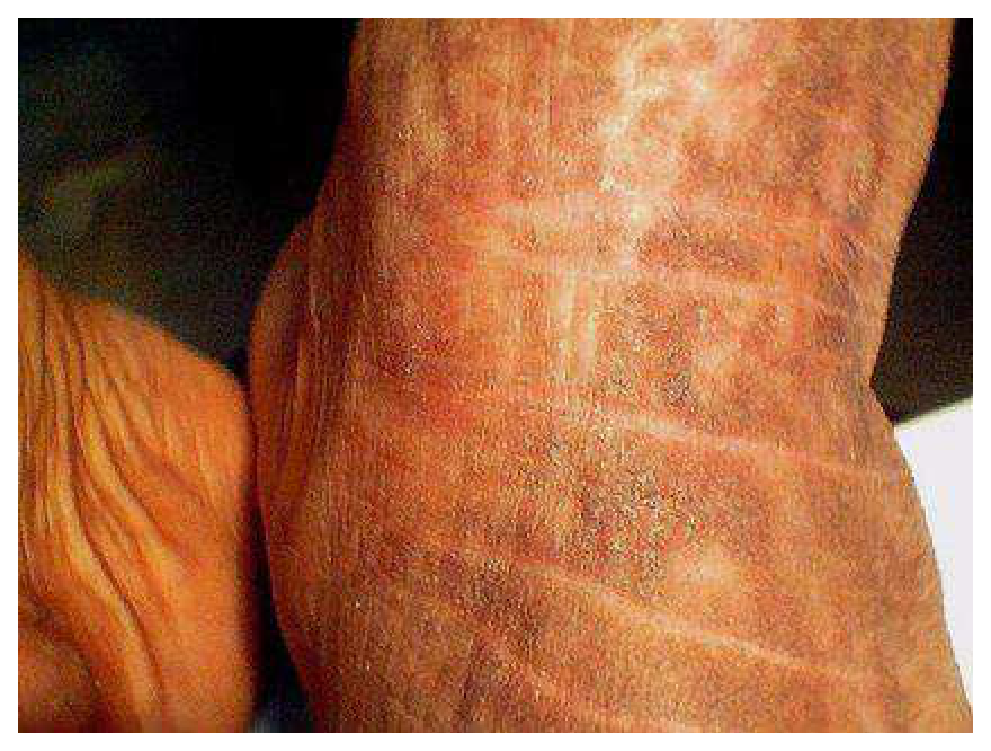
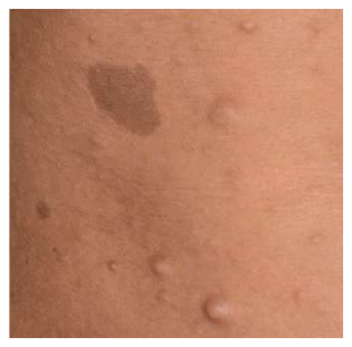
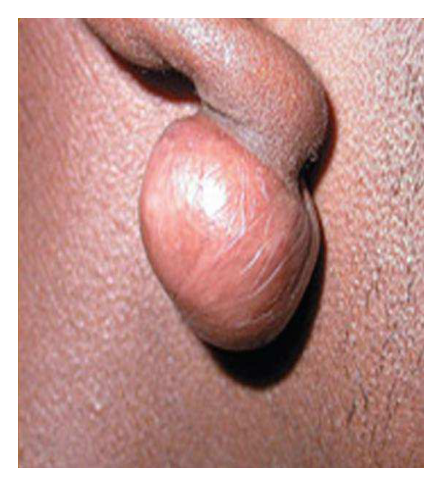
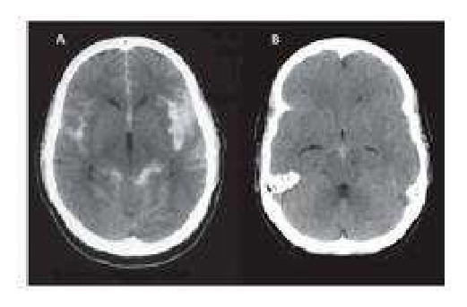
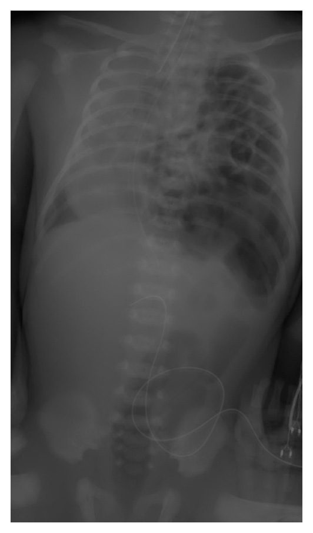
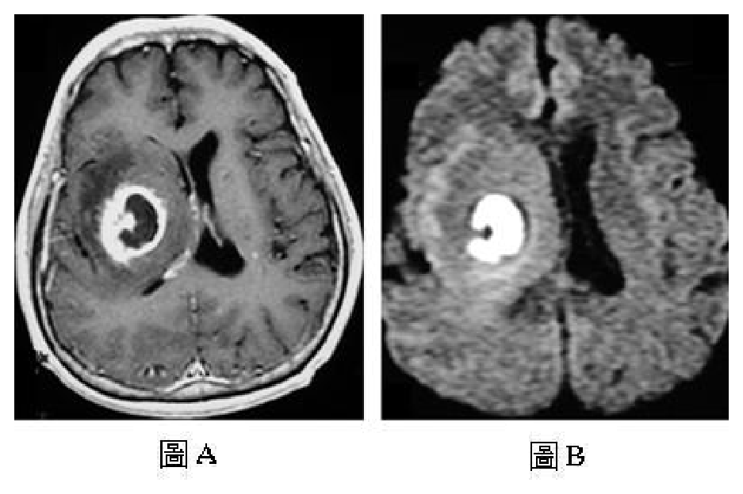

108 年第 2 次醫師醫學（四）（包括小兒科、皮膚科、神經科、精神科等科目及其相關臨床實例與醫學倫理）試題與答案
這一頁是民國 108 年第 2 次醫師醫學（四）（包括小兒科、皮膚科、神經科、精神科等科目及其相關臨床實例與醫學倫理）的整份歷屆試題，共 80 題，題目與標準答案出自考選部「國家考試試題及測驗式試題答案」開放資料，其中 80 題附有詳解。以下逐題列出題幹、選項與答案；要計時作答或記錄成績，請用線上練習。
考選部原始場次代碼：108080
線上作答這一科 →
全部 80 題
第 1 題
3天大的新生兒，在軀幹與手腳出現大小1～2 mm的紅色丘疹與水泡，一週後這些疹子在未經治療的情形之下自行消失。下列那一項是最可能的診斷？
- （A）Erythema toxicum
- （B）Carbuncle
- （C）Salmon patch
- （D）Congenital syphilis
答案：（A）
詳解與考點
正解：出生後第 3 天出現軀幹與四肢的小紅丘疹、水泡，且一週內自行消退。這是新生兒毒性紅斑的典型良性、自限性表現，故選 A。
B：carbuncle 是較深層的細菌性皮膚感染，通常有疼痛、化膿與局部發炎，不會在一週內無治療自行消退。
C：salmon patch 是出生即有的扁平粉紅色血管斑，常位於後頸、眼瞼或眉間，並非丘疹與水泡。
D：先天性梅毒可有皮疹，但常伴隨其他全身表現，不符合本題短暫、自行消退的新生兒皮疹。
本題考點：新生兒毒性紅斑（erythema toxicum neonatorum）為常見良性新生兒皮疹，常在出生後數日出現並自限性消退；應與感染性皮膚病灶（infectious dermatoses）區分。
第 2 題
關於嬰幼兒感染砂眼披衣菌（Chlamydia trachomatis）肺炎之敘述，下列何者較正確？
- （A）罹患砂眼披衣菌母親且未接受治療，約九成其新生兒會得到砂眼披衣菌肺炎
- （B）通常新生兒出生後1週內會有明顯肺炎症狀
- （C）相對呼吸道融合病毒感染，砂眼披衣菌肺炎較容易發燒及喘鳴聲（Wheezing）
- （D）砂眼披衣菌感染後，血液中嗜伊紅白血球會增加（eosinophils > 400 cells/μL）
答案：（D）
詳解與考點
正解：嬰幼兒砂眼披衣菌肺炎的典型實驗室線索。Chlamydia trachomatis 肺炎可伴周邊血嗜伊紅白血球增加，題示 eosinophils 超過 400 cells/μL 與此相符，故選 D。
A：感染母親所生新生兒不一定都會得到肺炎；可有結膜炎或無症狀，不能把暴露風險直接等同肺炎發生率。
B：砂眼披衣菌肺炎通常在出生後數週才出現，並非多在 1 週內即明顯發病。
C：此病常為無發燒或低熱、漸進性咳嗽與呼吸急促；喘鳴並非相較 RSV 更典型的特徵。它看似同為嬰兒下呼吸道感染，臨床型態與 RSV 細支氣管炎不同。
本題考點：砂眼披衣菌肺炎（Chlamydia trachomatis pneumonia）多在嬰兒期較晚出現，可有嗜伊紅白血球增多（eosinophilia）；應與呼吸道融合病毒細支氣管炎（RSV bronchiolitis）鑑別。
第 3 題
有關猩紅熱（Scarlet fever）的敘述，下列何者錯誤？
- （A）臨床上需與病毒疹、川崎氏症（Kawasaki disease）或是金黃色葡萄球菌感染區別
- （B）猩紅熱的疹子摸起來有粗糙的感覺
- （C）典型症狀亦包含草莓舌、全身性瀰漫紅疹、嘴唇周圍蒼白，數天後皮膚會脫屑
- （D）猩紅熱的致病機轉和A群鏈球菌（Group A streptococcus）所產生的內毒素（Endotoxin）有關
答案：（D）
詳解與考點
正解：猩紅熱的毒素來源。A 群鏈球菌造成猩紅熱主要是因產生致熱性外毒素，而不是內毒素；革蘭氏陽性菌並無典型脂多醣內毒素，故錯誤的是 D。
A：猩紅熱的發燒與紅疹須和病毒疹、川崎症及金黃色葡萄球菌毒素相關疾病鑑別，敘述正確。
B：猩紅熱的細小丘疹使皮膚有砂紙般粗糙觸感，是典型線索，敘述正確。
C：草莓舌、瀰漫性紅疹、口周蒼白及恢復期脫屑均可見於猩紅熱，敘述正確。
本題考點：猩紅熱（scarlet fever）由 A 群鏈球菌（Group A streptococcus）感染及致熱性外毒素（pyrogenic exotoxin）引起；砂紙樣皮疹與草莓舌是重要臨床特徵。
第 4 題
未規則產檢的媽媽急產，其新生兒因呼吸窘迫住院，細菌室通知血液培養長革蘭氏陽性球菌，下列何者為最可能造成此新生兒敗血症的細菌？
- （A）Staphylococcus aureus
- （B）Streptococcus agalactiae
- （C）Escherichia coli
- （D）Listeria monocytogenes
答案：（B）
詳解與考點
正解：未規則產檢、急產後的新生兒呼吸窘迫，血液培養為革蘭氏陽性球菌。B 群鏈球菌 Streptococcus agalactiae 是早發型新生兒敗血症的重要病原，可在產道垂直傳播並造成肺炎與敗血症，故選 B。
A：Staphylococcus aureus 雖可造成新生兒感染，但相較於 B 群鏈球菌，較不符合典型的產時垂直傳播早發敗血症情境。
C：Escherichia coli 是早發新生兒敗血症常見病原之一，但為革蘭氏陰性桿菌，與題示革蘭氏陽性球菌不符。
D：Listeria monocytogenes 為革蘭氏陽性桿菌而非球菌，故不符培養型態。
本題考點：早發型新生兒敗血症（early-onset neonatal sepsis）常與產時垂直傳播有關；B 群鏈球菌（Group B streptococcus, Streptococcus agalactiae）是重要革蘭氏陽性球菌病原。
第 5 題
7天大男嬰，發現有呼吸窘迫、發紺及心雜音。呼吸次數每分鐘60次合併厲害胸凹（Subcostal retraction）現象，肝臟下緣位於右肋骨下4公分，右手血壓為90/50 mmHg，左手及下肢血壓約為60/45 mmHg。下列敘述何者錯誤？
- （A）需要給與前列腺素（Prostaglandin E1）
- （B）常合併胸腺發育不良（Thymic hypoplasia）
- （C）常合併臉部異常及顎裂（Cleft palate）
- （D）常合併血中鈣離子偏高（Hypercalcemia）
答案：（D）
詳解與考點
正解：右手血壓明顯高於左手與下肢，加上 7 日大出現心衰竭表現，提示嚴重主動脈弓阻塞性心疾患，且可能與 22q11.2 缺失相關。此類疾病可伴胸腺發育不良、顏面異常、顎裂及低血鈣；「高血鈣」方向相反，故錯誤的是 D。
A：維持動脈導管通暢可改善導管依賴性全身循環，故需考慮 Prostaglandin E1，敘述正確。
B：22q11.2 缺失相關的胸腺發育不良可與主動脈弓異常共存，敘述正確。
C：顏面異常與顎裂也是此相關症候群可見表現，敘述正確。
本題考點：導管依賴性先天性心臟病（duct-dependent congenital heart disease）可用 Prostaglandin E1 維持導管；22q11.2 deletion syndrome 可見胸腺發育不良、顎裂與低血鈣（hypocalcemia）。
第 6 題
下列何種疾病是因膽色素結合酵素（glucuronyl transferase）活性不良所引起新生兒間接型高膽色素血症（indirect hyperbilirubinemia）之原因？
- （A）Gilbert disease
- （B）Hereditary spherocytosis
- （C）G6PD deficiency
- （D）ABO incompatibility
答案：（A）
詳解與考點
正解：膽紅素結合酵素 glucuronyl transferase 活性不良。Gilbert disease 因 UGT1A1 活性下降，肝臟對非結合型膽紅素的結合能力減少，可造成間接型高膽紅素血症，故選 A。
B：遺傳性球形紅血球症以溶血增加膽紅素生成為主，酵素結合缺陷不是病因。
C：G6PD deficiency 會使紅血球在氧化壓力下溶血，造成膽紅素負荷增加，非 glucuronyl transferase 活性不良。
D：ABO incompatibility 是母胎血型不合造成免疫性溶血；它看似同樣造成新生兒間接型黃疸，但機轉在紅血球破壞而非膽紅素結合。
本題考點：間接型高膽紅素血症（indirect hyperbilirubinemia）可由結合不足或溶血造成；Gilbert disease 與 UGT1A1/glucuronyl transferase 活性下降相關。
第 7 題
新生兒出生後，發現腹腔內臟突出，並有一層薄膜覆蓋包住並與臍帶相連，最有可能的診斷為何？
- （A）臍膨出（omphalocele）
- （B）腹裂（gastroschisis）
- （C）臍疝氣（umbilical hernia）
- （D）臍肉芽腫（umbilical granuloma）
答案：（A）
詳解與考點
正解：腹腔內臟突出但有薄膜覆蓋，且與臍帶相連。臍膨出為腹壁中線缺損，突出臟器被囊膜包覆並位於臍帶基部，故選 A。
B：腹裂通常位於臍帶旁，腸管直接暴露於羊水中而沒有覆蓋囊膜，與題幹最關鍵的薄膜不符。
C：臍疝氣是臍環未完全閉合造成的可復性膨出，皮膚覆蓋完整，不是出生時腹腔臟器以囊膜外露。
D：臍肉芽腫是臍帶脫落後局部肉芽組織增生，外觀與腹腔臟器突出完全不同。
本題考點：臍膨出（omphalocele）為中線腹壁缺損，內臟有囊膜覆蓋並與臍帶相連；腹裂（gastroschisis）多為臍旁缺損且無囊膜。
第 8 題
下列有關新生兒暫時性呼吸過速（Transient tachypnea of newborn）之敘述，何者最不適當？
- （A）與肺部液體吸收不全有關
- （B）自然產嬰兒相較剖腹產嬰兒容易發生
- （C）大部份呼吸窘迫症狀於72小時內緩解
- （D）少數個案可併發持續性肺動脈高壓
答案：（B）
詳解與考點
正解：新生兒暫時性呼吸過速由肺液清除延遲所致。經產道擠壓與分娩時的生理變化有助肺液吸收，因此剖腹產，尤其未經產程者，風險較高；說自然產比剖腹產容易發生，方向相反，最不適當，故選 B。
A：肺部液體吸收不全是新生兒暫時性呼吸過速的主要機轉，敘述正確。
C：多數病例為自限性，呼吸窘迫通常在 72 小時內緩解，敘述正確。
D：雖不常見，嚴重個案可合併持續性肺動脈高壓，敘述正確。
本題考點：新生兒暫時性呼吸過速（transient tachypnea of the newborn, TTN）源於胎兒肺液清除延遲；剖腹產（cesarean delivery）是重要危險因子，多數病例為自限性。
第 9 題
下列何種疾病，最少合併膽囊水腫（Hydrops of gallbladder）？
- （A）川崎症（Kawasaki disease）
- （B）多脾症（Polysplenia syndrome）
- （C）鏈球菌咽喉炎（Streptococcal pharyngitis）
- （D）過敏性紫斑症（Henoch–Schönlein purpura）
答案：（B）
詳解與考點
正解：找最少合併膽囊水腫的疾病。川崎症與過敏性紫斑症可因血管炎或膽囊壁水腫出現膽囊水腫；鏈球菌咽喉炎也是兒童膽囊水腫的已知相關疾病。多脾症主要與內臟異位及先天性心血管異常相關，非典型膽囊水腫相關疾病，故選 B。
A：川崎症可出現膽囊水腫，是腹部超音波可見的表現之一。
C：鏈球菌咽喉炎雖較少見，仍可與膽囊水腫相關，可能涉及毒素作用或腸繫膜淋巴結腫大造成膽囊管阻塞；因此較多脾症具直接關聯。
D：過敏性紫斑症可侵犯腸胃道與膽囊，造成膽囊壁水腫或類似急腹症表現。
本題考點：膽囊水腫（hydrops of gallbladder）在兒科可與全身性發炎及血管炎（vasculitis）相關，如川崎症（Kawasaki disease）、鏈球菌咽喉炎及過敏性紫斑症（Henoch-Schönlein purpura）。
第 10 題
依據兒童健康手冊，關於母乳哺育兒的正常生理現象，下列何者錯誤？
- （A）喝母乳的寶寶，黃疸可能持續到2～3個月才完全消退，但為避免其他疾病，如果寶寶滿月後仍有黃疸，應請教兒科醫師
- （B）喝母乳的寶寶在頭幾個月的大便通常是稀稀水水的，帶有顆粒或酸味，甚至一吃就解便，一般屬於正常現象，如果身高體重異常，應請教兒科醫師
- （C）有些寶寶在3週大以後，可能大便次數變少，變成3至4天才解1次軟便，甚至10到14天才解便1次
- （D）喝母乳的寶寶其第一次胎便，常延遲至24至48小時才排出，屬於正常現象
答案：（D）
詳解與考點
正解：母乳哺育兒的「正常生理現象」。第一次胎便排出反映出生後腸道通暢，通常應在出生後 24 小時內出現；延遲到 24 至 48 小時不能概括為母乳兒的正常現象，須考慮腸阻塞等問題，故錯誤的是 D。
A：母乳性黃疸可持續較久，但滿月後仍有黃疸應由兒科醫師評估，以排除病理性原因，敘述適當。
B：母乳兒早期糞便常較稀、次數多，若生長正常通常可屬生理現象，敘述正確。
C：部分較大的母乳兒排便間隔可拉長，只要糞便柔軟且生長良好，未必是便祕，敘述正確。
本題考點：母乳哺育（breastfeeding）可見較久黃疸與排便型態變化；胎便（meconium）應及早排出，延遲排出須評估腸道通暢與病理性原因。
第 11 題
關於威爾森氏疾病（Wilson disease），下列敘述何者錯誤？
- （A）屬於體染色體隱性（Autosomal recessive）遺傳疾病
- （B）找不到病因的肝炎應把威爾森氏疾病列為鑑別診斷
- （C）眼睛視網膜（Retina）會出現Kayser-Fleischer ring
- （D）大部份病患血清中的Ceruloplasmin濃度會降低
答案：（C）
詳解與考點
正解：Kayser-Fleischer ring 的位置。威爾森氏疾病的銅沉積環位於角膜周邊的 Descemet membrane，不在視網膜，故錯誤的是 C。
A：威爾森氏疾病為 ATP7B 相關的體染色體隱性遺傳疾病，敘述正確。
B：不明原因肝炎，尤其合併神經精神表現或溶血線索時，應將威爾森氏疾病納入鑑別診斷，敘述正確。
D：多數患者血清 ceruloplasmin 降低，是重要但非單獨確診的線索，敘述正確。
本題考點：威爾森氏疾病（Wilson disease）為銅代謝障礙（copper metabolism disorder）；Kayser-Fleischer ring 位於角膜（cornea）而非視網膜，ceruloplasmin 常降低。
第 12 題
關於兒童次發性消化性潰瘍（Secondary peptic ulcers），下列敘述何者錯誤？
- （A）Nonsteroidal anti-inflammatory drugs（NSAIDs）藉由抑制prostaglandin，而造成黏膜損傷
- （B）Nonsteroidal anti-inflammatory drugs（NSAIDs）造成的潰瘍位置，最常見於十二指腸（duodenum）
- （C）壓力性潰瘍（Stress ulcer）通常在事件開始後的24小時內發生
- （D）氫離子幫浦抑制劑（Proton pump inhibitors），可用於治療嚴重潰瘍出血的病患
答案：（B）
詳解與考點
正解：NSAIDs 所致次發性消化性潰瘍的常見位置。NSAIDs 抑制 prostaglandin 後削弱黏膜防禦，但其潰瘍較常見於胃，並非十二指腸最常見；（B）錯誤，故選 B。
A：NSAIDs 抑制前列腺素會減少胃腸黏膜保護，確為造成潰瘍的重要機轉。
C：重症或休克的壓力性潰瘍可在事件早期出現，敘述正確。
D：氫離子幫浦抑制劑（proton pump inhibitor, PPI）可用於嚴重潰瘍出血的酸抑制治療。
本題考點：次發性消化性潰瘍（secondary peptic ulcer）——NSAIDs 使前列腺素下降而損害黏膜防禦；壓力性潰瘍（stress ulcer）與重症黏膜缺血相關；PPI 可用於潰瘍出血治療。
第 13 題
引起高陰離子間隙代謝性酸中毒（High anion gap metabolic acidosis）的疾病，下列何者最為罕見？
- （A）糖尿病引起酮酸血症 （Diabetic ketoacidosis, DKA）
- （B）因休克引起的乳酸中毒（Sepsis induced lactic acidosis）
- （C）腎小管酸血症（Renal tubular acidosis）
- （D）乙二醇中毒（Ethylene glycol intoxication）
答案：（C）
詳解與考點
正解：高陰離子間隙代謝性酸中毒。DKA 的酮酸、休克或敗血症的乳酸、乙二醇代謝產物皆會增加未測陰離子；腎小管酸血症（renal tubular acidosis, RTA）典型為正常陰離子間隙、高氯性酸中毒，故最罕見的是（C），選 C。
A：DKA 產生酮酸，為典型高陰離子間隙代謝性酸中毒。
B：休克或敗血症的組織低灌流可致乳酸堆積與陰離子間隙上升。
D：乙二醇的有機酸代謝產物會使陰離子間隙升高；雖臨床較少見，卻是經典病因。
本題考點：高陰離子間隙代謝性酸中毒（high anion gap metabolic acidosis）——常見於酮酸、乳酸與毒物代謝產物累積；RTA 典型為正常陰離子間隙酸中毒。
第 14 題
下列何種情形與鉀離子流失所造成的低血鉀（Hypokalemia）最無關？
- （A）注射胰島素（Insulin）
- （B）長期使用利尿劑（Long-term usage of diuretics）
- （C）腸胃炎引起腹瀉（Gastroenteritis induced diarrhea）
- （D）腎小管酸血症 （Renal tubular acidosis）
答案：（A）
詳解與考點
正解：「與鉀離子流失」最無關。胰島素使鉀移入細胞而降低血清鉀，屬跨細胞移位，不是身體總鉀流失；（A）最無關，故選 A。
B：長期利尿劑會增加腎臟排鉀，屬腎性鉀流失。
C：腹瀉會直接流失糞便中的鉀，屬腸胃道鉀流失。
D：部分 RTA 會增加腎小管排鉀，造成低血鉀。
本題考點：低血鉀（hypokalemia）——應區分總鉀流失與跨細胞移位；胰島素（insulin）使鉀移入細胞，利尿劑、腹瀉與部分 RTA 則造成實際鉀流失。
第 15 題
有關兒童過敏性紫斑症引起的腎臟發炎（Henoch-SchÖnlein purpura nephritis），下列敘述何者正確？
- （A）於發病時，都會同時合併上呼吸道感染（Upper respiratory tract infection）的症狀
- （B）血尿（Hematuria）或蛋白尿（proteinuria）等腎臟方面的表現，都會與皮膚的表現（palpable purpura）同時出現
- （C）與IgA腎炎（IgA nephropathy）的鑑別診斷，必需藉由病理切片作判斷
- （D）急性期有併發腎炎的患者，成年後罹患慢性腎臟病（Chronic kidney disease）的機會較大
答案：（D）
詳解與考點
正解：HSP 腎炎的長期預後。急性期已有血尿、蛋白尿或較嚴重腎炎代表腎臟受累，成年後持續腎功能異常或慢性腎臟病風險較高，故（D）正確。
A：上呼吸道感染是常見前驅事件，卻不是每名病童發病時都同時存在；「都會」誤將常見當必要。
B：腎臟表現可晚於皮膚紫斑，並非必定同步出現。
C：HSP 腎炎與 IgA 腎病須結合紫斑、腹痛或關節症狀等臨床脈絡鑑別，非必定只能靠切片。
本題考點：IgA 血管炎（IgA vasculitis/HSP）腎炎——腎臟受累可晚於皮膚紫斑；腎炎嚴重度關係長期腎臟預後；與 IgA nephropathy 的鑑別須合併臨床表現。
第 16 題
3歲大的兒童，門診的身體診察發現此病童頭圍小，戴助聽器，只能說出簡單的詞彙，而無法說出短句，其它的身體診察正常。其出生史為足月自然產並合併黃疸及血小板過低。本次電腦斷層檢查發現腦室周圍有鈣化。根據以上資訊下列那一種先天性感染疾病最有可能？
- （A）梅毒（Syphilis）
- （B）弓漿蟲病（Toxoplasmosis）
- （C）疱疹病毒（Herpes simplex virus infection）
- （D）巨細胞病毒感染（Cytomegalovirus infection）
答案：（D）
詳解與考點
正解：小頭症、感音性聽損、黃疸、血小板低下與腦室周圍鈣化的組合。這是先天性巨細胞病毒感染（congenital cytomegalovirus infection）的典型表現，故選 D。
A：先天性梅毒可有皮疹、骨病變或肝脾腫大，但不以本題的腦室周圍鈣化與聽損組合為典型。
B：先天性弓漿蟲病也有顱內鈣化，容易成為誘答；但較常合併水腦症、脈絡膜視網膜炎與瀰漫性鈣化。
C：先天性疱疹病毒感染常見皮膚、眼與中樞神經病灶，並非以腦室周圍鈣化及聽損為典型。
本題考點：先天性巨細胞病毒感染（congenital CMV infection）——小頭症、腦室周圍鈣化、血小板低下與感音性聽損是重要線索；須與先天性弓漿蟲病（congenital toxoplasmosis）鑑別。
第 17 題
罹患頭痛的小孩，出現以下何種情形時，最需要做神經影像檢查？
- （A）頭痛持續一個小時以上
- （B）出現發燒
- （C）有局部不正常神經學徵兆（Focal neurological sign）
- （D）有偏頭痛（Migraine）家族史
答案：（C）
詳解與考點
正解：兒童頭痛的危險警訊。局部不正常神經學徵兆（focal neurological sign）可指向局部結構病灶、出血、感染或顱內壓異常，最需要神經影像檢查，故選 C。
A：頭痛持續超過一小時缺乏特異性，原發性頭痛也可持續較久。
B：發燒須結合頸僵、意識改變等評估；單獨發燒不如局部神經徵兆直接指向腦內病灶。
D：偏頭痛家族史支持原發性偏頭痛的可能，並非影像檢查紅旗。
本題考點：兒童頭痛（pediatric headache）——局部神經學缺損、意識改變或顱內壓升高線索須考慮神經影像；偏頭痛（migraine）家族史本身不代表結構性病灶。
第 18 題
一歲小孩自6個月大起，發生數次大哭後面色發黑，並喪失意識，數秒後清醒正常，身體診察無明顯異常，最常見之疾病為何？
- （A）屏氣發作（Breath-holding spell）
- （B）先天性心臟病（Congenital heart disease）
- （C）過度換氣症候群（Hyperventilation syndrome）
- （D）失神發作（Absence attack）
答案：（A）
詳解與考點
正解：嬰兒大哭後發紺、短暫失去意識、數秒後完全恢復且檢查正常。這是典型屏氣發作（breath-holding spell），故選 A。
B：先天性心臟病的發紺通常不僅在哭鬧後短暫出現，常有持續發紺、心雜音或生長不良。
C：過度換氣症候群多見於較大兒童或青少年，與嬰兒哭後閉氣不符。
D：失神發作通常是突然發呆或活動中斷，不由哭鬧觸發且不以發紺為特徵；哭後短暫失去意識看似癲癇，但病程更支持屏氣發作。
本題考點：屏氣發作（breath-holding spell）——常在嬰幼兒哭鬧後出現發紺或蒼白、短暫意識喪失與迅速恢復；須與癲癇（seizure）及心臟病鑑別。
第 19 題
由於母親的甲狀腺促素受器阻斷抗體（maternal thyrotropin receptor-blocking antibody），導致其新生兒發生先天性甲狀腺低能症（congenital hypothyroidism），下列敘述何者錯誤？
- （A）當母親患有甲狀腺自體免疫疾病（autoimmune thyroid disease）時，應考慮此診斷
- （B）患兒及其母親均可測到甲狀腺促素受器抗體（thyrotropin receptor antibody）
- （C）患兒接受甲狀腺超音波檢查無法顯示甲狀腺存在，但同位素檢查可見其存在
- （D）患兒是否需長期接受甲狀腺素補充，取決於後續抗體及甲狀腺功能追蹤結果
答案：（C）
詳解與考點
正解：母體受器阻斷抗體造成的暫時性甲狀腺低下。甲狀腺本體通常存在，只是功能受抗體抑制，超音波應能顯示甲狀腺；（C）稱超音波無法顯示卻同位素可見存在，敘述錯誤，選 C。
A：母親有自體免疫甲狀腺疾病時，應考慮可穿越胎盤的阻斷抗體。
B：此機轉由母體抗體跨胎盤造成，母嬰皆可能檢出甲狀腺促素受器抗體。
D：母體抗體可逐漸消退，是否需長期補充甲狀腺素須依後續抗體與功能追蹤決定。
本題考點：暫時性先天性甲狀腺低下症（transient congenital hypothyroidism）——母體 thyrotropin receptor-blocking antibody 可抑制胎兒甲狀腺；須與甲狀腺發育不全（thyroid dysgenesis）區分。
第 20 題
下列何者不是確診生長激素缺乏症（growth hormone deficiency）之激發試驗（provocative test）？
- （A）Oral glucose tolerance test
- （B）Arginine test
- （C）Clondine test
- （D）Glucagon test
答案：（A）
詳解與考點
正解：確診生長激素缺乏須使用會刺激 GH 分泌的試驗。口服葡萄糖耐量試驗（oral glucose tolerance test）反而抑制生長激素，主要用於評估 GH 過多，故（A）不是激發試驗，選 A。
B：arginine 可刺激生長激素分泌，是常用激發試驗。
C：clonidine 可促進生長激素分泌，可作刺激檢查。
D：glucagon 刺激試驗也可評估生長激素分泌儲備。
本題考點：生長激素缺乏症（growth hormone deficiency）——arginine、clonidine 與 glucagon 可作激發試驗；OGTT 以抑制 GH 為主，常用於 GH 過多評估。
第 21 題
下列何者不是典型嚴重氣喘患童之肺功能測量儀（spirometry）測量結果？（FVC：forced vital capacity全力吐氣量；FEV1：forced expiratory volume at one second一秒全力吐氣量。）
- （A）FEV1/ FVC比值＜0.80
- （B）支氣管擴張反應FEV1改善值≧12%
- （C）運動激發試驗FEV1值下降≧15%
- （D）每天晨間和晚間FEV1變異度≦20%
答案：（D）
詳解與考點
正解：「不是典型嚴重氣喘」的肺功能。嚴重或控制不佳氣喘會有較明顯日內氣流變異；（D）的晨晚 FEV1 變異度≦20%較接近穩定或控制佳狀態，故選 D。
A：FEV1/FVC 降低支持阻塞性氣流受限，與氣喘相符。
B：支氣管擴張後 FEV1 顯著改善反映可逆性氣流阻塞。
C：運動後 FEV1 顯著下降支持運動誘發支氣管收縮，與氣喘相符。
本題考點：氣喘肺功能（asthma spirometry）——FEV1/FVC 下降反映阻塞；支氣管擴張反應（bronchodilator response）與運動誘發 FEV1 下降反映氣道可變性；日內變異度關係控制狀態。
第 22 題
關於幼年型類風濕性關節炎（Juvenile idiopathic arthritis, JIA），下列何者錯誤？
- （A）根據美國風濕病醫學會（ACR）診斷標準，關節炎需持續超過6週
- （B）多關節型（Polyarthritis）JIA患者，風濕因子（Rheumatoid factor, RF）陽性者的預後較陰性者佳
- （C）全身系統型（Systemic arthritis）的JIA患者，有時會併發巨噬細胞活化症候群（Macrophage activationsyndrome），臨床表現為高燒，肝脾與淋巴結腫大，白血球減低等
- （D）少關節型（Oligoarthritis）JIA患者容易併發慢性葡萄膜炎（Chronic uveitis）
答案：（B）
詳解與考點
正解：多關節型 JIA 的 RF 與預後。RF 陽性者較接近成人血清陽性類風濕性關節炎表型，病程較具侵蝕性且預後較差；（B）說預後較佳，方向相反，故選 B。
A：JIA 定義包含未滿 16 歲起病且關節炎持續至少 6 週。
C：全身型 JIA 可併發巨噬細胞活化症候群（macrophage activation syndrome），可見高燒、肝脾腫大與血球減少。
D：少關節型 JIA 易併發慢性前葡萄膜炎，須規律眼科追蹤。
本題考點：幼年型特發性關節炎（juvenile idiopathic arthritis, JIA）——RF 陽性多關節型通常預後較差；全身型可發生 macrophage activation syndrome；少關節型須注意慢性葡萄膜炎（chronic uveitis）。
第 23 題
兒童全身性紅斑性狼瘡（Systemic lupus erythematosus, SLE）可以產生多種自體抗體，那兩種自體抗體專一性最高？
- （A）Antinuclear antibody（ANA）和 Anti-double-stranded DNA（anti-dsDNA）
- （B）Anti-La antibody和 Anti-Smith antibody
- （C）Anti-dsDNA和 Anti-Smith antibody
- （D）Anti-Ro antibody和 Anti-dsDNA
答案：（C）
詳解與考點
正解：SLE 抗體的「專一性最高」，不是敏感度最高。anti-double-stranded DNA（anti-dsDNA）與 anti-Smith antibody 對 SLE 都具有高專一性，故選 C。
A：ANA 對 SLE 敏感度高但可見於其他疾病或健康者，專一性不如 anti-dsDNA 與 anti-Smith；這是把敏感度誤作專一性的誘答。
B：anti-Smith 高度專一，但 anti-La 並非 SLE 專一抗體。
D：anti-Ro 可見於皮膚表現、Sjögren syndrome 或新生兒狼瘡，但非 SLE 高專一性抗體。
本題考點：系統性紅斑性狼瘡（systemic lupus erythematosus, SLE）抗體——ANA 敏感度高但專一性低；anti-dsDNA 與 anti-Smith antibody 專一性高；anti-dsDNA 常與狼瘡腎炎（lupus nephritis）活動性相關。
第 24 題
10歲女童小華，患有皮膚疹已經三個月，經醫師診斷為慢性蕁麻疹(Urticaria)，下列敘述何者錯誤？
- （A）診斷慢性蕁麻疹時，病人症狀反覆發生須超過 6星期
- （B）抽血通常有很高的機率找出過敏原
- （C）蕁麻疹分為急性和慢性，兩者形成機轉和治療方式不同
- （D）慢性蕁麻疹之病患血中之IgE抗體，不一定會升高
答案：（B）
詳解與考點
正解：慢性蕁麻疹的病因評估。慢性自發性蕁麻疹多非單一外來過敏原持續造成，常規抽血過敏檢驗通常不能以很高機率找出原因；（B）錯誤，故選 B。
A：蕁麻疹反覆超過 6 週即為慢性蕁麻疹，敘述正確。
C：急性與慢性蕁麻疹的病程、常見誘因及處置重點不同。
D：慢性蕁麻疹未必由 IgE 介導，血中 IgE 不一定升高。
本題考點：慢性蕁麻疹（chronic urticaria）——定義為症狀超過 6 週；慢性自發性蕁麻疹（chronic spontaneous urticaria）常無單一可由常規檢驗確認的過敏原；IgE 不一定升高。
第 25 題
關於缺鐵性貧血（Iron-deficiency anemia）病人，如果沒有發生心衰竭或嚴重胃腸道出血，下列何者錯誤？
- （A）服用鐵劑後注意腸胃及便秘情形
- （B）網狀紅血球追蹤檢查
- （C）在血液常規檢查正常後，一般建議繼續給與鐵劑治療2-3個月
- （D）立即給與紅血球輸血
答案：（D）
詳解與考點
正解：題幹已排除心衰竭與嚴重胃腸道出血，表示沒有緊急輸血指徵。缺鐵性貧血應以鐵劑補充與處理病因為主，立即紅血球輸血並非常規處置；（D）錯誤，故選 D。
A：口服鐵劑常造成腸胃不適、便秘或糞便變黑，須注意副作用。
B：網狀紅血球反應可作為補鐵後骨髓造血反應的追蹤線索。
C：血球數正常不等於鐵儲存補足，通常仍應繼續補鐵一段時間。
本題考點：缺鐵性貧血（iron-deficiency anemia）治療——首選鐵劑並追查失血或吸收不良原因；網狀紅血球（reticulocyte）可反映治療反應；輸血限於特定嚴重情境。
第 26 題
白血病患童，若白血球數目高於十萬時，屬腫瘤急症，可能會併發各種問題，下列何項最不會出現？
- （A）高尿酸血症（Hyperuricemia）
- （B）血栓形成（Thrombosis）
- （C）腹瀉（Diarrhea）
- （D）缺氧（Hypoxia）
答案：（C）
詳解與考點
正解：高白血球腫瘤急症的直接併發症。白血球高於十萬可造成 leukostasis、缺氧與血栓相關問題，並可能伴隨腫瘤溶解造成高尿酸血症；腹瀉不是典型直接併發症，故選 C。
A：高細胞周轉或腫瘤溶解可造成高尿酸血症。
B：高白血球的血液黏滯與微循環障礙可出現血栓相關併發症。
D：白血球淤滯於肺微循環可妨礙氧合，缺氧是重要表現。
本題考點：高白血球症（hyperleukocytosis）與白血球淤滯（leukostasis）——可造成肺部與中樞神經微循環障礙及缺氧；腫瘤溶解症候群（tumor lysis syndrome）可伴隨高尿酸血症。
第 27 題
凝血酶原時間（Prothrombin time, PT）延長，但活化部分凝血活酶時間（activated partial thromboplastin time,aPTT）正常，最常是因為下列那一因子缺乏所造成？
- （A）Factor 8
- （B）Factor 9
- （C）Factor 7
- （D）Factor 11
答案：（C）
詳解與考點
正解：PT 延長而 aPTT 正常，代表外因性凝血途徑單獨受損。Factor VII 是外因性途徑因子，缺乏時可單獨延長 PT，故選 C。
A：Factor VIII 屬內因性途徑，缺乏時主要延長 aPTT。
B：Factor IX 屬內因性途徑，缺乏時主要延長 aPTT。
D：Factor XI 也屬內因性途徑，不能解釋單獨 PT 延長。
本題考點：凝血檢驗（coagulation tests）——PT 評估外因性與共同途徑，Factor VII 缺乏可單獨延長 PT；aPTT 評估內因性與共同途徑。
第 28 題
有關常見無害心雜音（Innocent murmur）的敘述，下列何者錯誤？
- （A）心雜音強度通常低於第三度
- （B）坐姿比平躺時，雜音較明顯
- （C）心雜音強度會隨著呼吸改變
- （D）雜音常在收縮期，且為共振音或樂音（Vibratory or musical murmur）
答案：（B）
詳解與考點
正解：無害心雜音的姿勢變化。無害心雜音多在仰臥時因靜脈回流增加而較明顯，坐姿通常減弱；（B）說坐姿較明顯，錯誤，故選 B。
A：無害心雜音通常強度低，常在第三度以下。
C：其強度可隨呼吸、姿勢或心輸出量改變，符合生理性雜音特性。
D：常為收縮期、共振或樂音性雜音，是常見無害心雜音描述。
本題考點：無害心雜音（innocent murmur）——通常低強度、收縮期且隨姿勢與呼吸改變；仰臥增加靜脈回流時常較明顯，須與病理性心雜音區分。
第 29 題
治療發紺性先天性心臟病常用的外科Blalock-Taussig分流術式（Blalock-Taussig shunt），主要是連接下列那二條血管，以達到改善缺氧的效果？
- （A）鎖骨下動脈和同側肺靜脈（Subclavian artery and pulmonary vein of the same side）
- （B）升主動脈和肺動脈（Ascending aorta and main pulmonary artery）
- （C）頸動脈和同側肺動脈（Carotid artery and subclavian artery of the same side）
- （D）鎖骨下動脈和同側肺動脈（Subclavian artery and pulmonary artery of the same side）
答案：（D）
詳解與考點
正解：Blalock-Taussig 分流術用來增加肺血流、改善發紺。手術以鎖骨下動脈連接同側肺動脈，讓體循環血流進入肺循環，故選 D。
A：肺靜脈是已氧合血回流左心的血管，連接它不能建立增加肺動脈血流的典型分流。
B：升主動脈與肺動脈的連接屬其他大血管分流概念，並非 Blalock-Taussig shunt。
C：此選項的血管組合與目的皆不符，且題示英文將頸動脈與鎖骨下動脈相連，未連至肺動脈。
本題考點：Blalock-Taussig shunt——以鎖骨下動脈（subclavian artery）連接同側肺動脈（pulmonary artery）增加肺血流，作為發紺性先天性心臟病的姑息性分流。
第 30 題
有關兒童感染性心內膜炎（Infective endocarditis）臨床表徵的敘述，下列何者錯誤？
- （A）病童可能是先天性心臟病的患者，或是有放置中央靜脈導管（Central venous catheter）的患者
- （B）病童有呼吸喘，夜間盜汗，體重下降的症狀
- （C）病童身體檢查有脾臟腫大，或是出現Roth spots等栓塞性現象（Embolic phenomena）
- （D）病童的實驗室檢查常有白血球低下（Leukopenia）或蛋白尿（Proteinuria）現象
答案：（D）
詳解與考點
正解：感染性心內膜炎的實驗室表徵。感染通常引起發炎反應與白血球上升，蛋白尿可能因免疫複合體腎炎出現；（D）稱常有白血球低下，並非典型，故選 D。
A：先天性心臟病與中央靜脈導管都是兒童感染性心內膜炎的重要危險因子。
B：呼吸喘、夜間盜汗與體重下降可見於亞急性感染與心衰竭相關臨床表現。
C：脾臟腫大、Roth spots 與栓塞現象均可見於感染性心內膜炎。
本題考點：感染性心內膜炎（infective endocarditis）——先天性心臟病與血管內導管為危險因子；可有全身症狀、脾腫大與栓塞現象；發炎時較常見白血球上升而非白血球低下。
第 31 題
4歲男孩，因走路容易跌倒及爬樓梯有困難而就診，而且無法很順利的由椅子站起來，需要雙手幫忙，抽血發現血中CK（Creatine kinase）濃度為18,000 IU/L，過去史顯示3歲以前發展里程碑是正常的，本病例最可能的診斷是：
- （A）Charcot-Marie-Tooth disease
- （B）Duchenne muscular dystrophy
- （C）Myotonic dystrophy
- （D）Spinal muscular atrophy
答案：（B）
詳解與考點
正解：4 歲男童近端肌無力、Gowers sign 與 CK 18,000 IU/L。早年發展可正常，之後出現容易跌倒、爬樓梯及由椅子起身困難，合併極高 CK，最符合 Duchenne muscular dystrophy，故選 B。
A：Charcot-Marie-Tooth disease 多為遠端肌無力與感覺神經病變，CK 通常不會如此顯著升高。
C：myotonic dystrophy 的重點是肌強直與特徵性全身表現，不是典型學齡前男童的 Gowers sign 加極高 CK。
D：spinal muscular atrophy 為下運動神經元疾病，常有肌束顫動與腱反射降低，CK 上升通常不如 DMD 顯著。
本題考點：Duchenne muscular dystrophy（DMD）——X-linked dystrophinopathy 造成進行性近端肌無力、Gowers sign 與明顯 CK 升高；應與周邊神經病變及脊髓性肌肉萎縮症（spinal muscular atrophy）區分。
第 32 題
下列有關苯酮尿症（Phenylketonuria）的敘述，何者正確？
- （A）為體染色體顯性遺傳模式，主要為Phenylalanine hydroxylase（PAH）或 Tetrahydrobiopterin（BH4） defect所造成
- （B）典型的苯酮尿症患者，出現發展遲緩，嘔吐，皮膚毛髮顏色變淡等症狀
- （C）為避免智力受損，需限制苯丙胺酸（Phenylalanine）的攝食，建議維持血中苯丙胺酸在2 mg/dL以下
- （D）生育期之女性苯酮尿症（Phenylketonuria）患者，更應該嚴格控制血中苯丙胺酸（Phenylalanine）濃度，以免生出苯酮尿症之嬰兒
答案：（B）
詳解與考點
正解：典型苯酮尿症的未治療表現。苯丙胺酸羥化酶缺乏使苯丙胺酸及其代謝物累積，會造成神經發展遲緩；酪胺酸生成不足則可使皮膚與毛髮色素較淡，嬰兒亦可有餵食困難或嘔吐，故（B）正確。
A：苯酮尿症通常是體染色體隱性遺傳（autosomal recessive inheritance），雖可由 PAH 或 BH4 代謝缺陷造成，但「顯性遺傳」錯誤。
C：限制膳食苯丙胺酸是治療原則，但血中目標須依年齡與臨床情境調整；將所有患者一概定為低於 2 mg/dL 過度嚴格，不能作為通則。
D：母體苯丙胺酸控制不佳主要增加胎兒小頭症、發展遲緩與先天性心臟病等母體 PKU 胚胎病變風險；不是因而直接「生出苯酮尿症之嬰兒」，胎兒是否患病取決於遺傳型。
本題考點：苯酮尿症（phenylketonuria, PKU）是苯丙胺酸代謝障礙，典型型多由苯丙胺酸羥化酶（phenylalanine hydroxylase, PAH）缺乏造成；早期飲食控制可預防神經認知傷害；母體 PKU（maternal PKU）須與胎兒遺傳診斷分開思考。
第 33 題
有關Trisomy18（Edwards syndrome）的敘述，下列何者錯誤？
- （A）容易早產
- （B）窄及外展受限的髖關節（Narrow hips with limited abduction）
- （C）經過良好治療，90%可存活至成年
- （D）存活者有嚴重的神經學發展遲緩
答案：（C）
詳解與考點
正解：題目問錯誤敘述，關鍵是 Trisomy 18 的自然病程。Edwards syndrome 伴有多重先天異常與嚴重發展障礙，整體死亡率很高，能存活至成年的比例遠低於 90%；即使接受良好醫療，也不能將成人存活率說成 90%，故（C）錯誤。
A：Trisomy 18 常見胎兒生長受限及早產，敘述正確，因此不是本題答案。
B：髖關節狹窄且外展受限是 Trisomy 18 可見的骨骼與姿勢異常之一，敘述正確。
D：存活者常有嚴重的神經發展遲緩，符合此染色體異常的臨床表現，故非錯誤選項。
本題考點：18 三體症（Trisomy 18/Edwards syndrome）常伴生長遲滯、多重先天異常與嚴重神經發展遲緩；其預後不佳，須避免把少數長期存活個案誤當成一般自然病程。
第 34 題
45歲男性，兩年來在足背逐步形成搔癢的皮疹，如圖所示，最適合的診斷為何？

- （A）急性濕疹（acute eczema）
- （B）慢性濕疹（chronic eczema）
- （C）尋常性乾癬（psoriasis vulgaris）
- （D）類澱粉症苔癬（lichen amyloidosis）
答案：（B）
詳解與考點
正解：圖中足背可見長期搔抓後的皮膚增厚、色素沉著與皮紋加深，呈苔癬化（lichenification）外觀；配合長達兩年的搔癢性皮疹，最符合慢性濕疹（chronic eczema）。反覆搔抓會破壞皮膚屏障並加重癢感，形成搔癢—搔抓循環，故選 B。
A：急性濕疹（acute eczema）通常以明顯紅斑、丘疹、丘疱疹、滲液或結痂為主；本圖主要是皮膚粗厚、乾燥及皮紋加深，反映慢性而非急性發炎期。
C：尋常性乾癬（psoriasis vulgaris）常為界線清楚的紅色斑塊，上覆較厚的銀白色鱗屑，且好發於伸側；本圖的苔癬化與搔抓痕跡較突出，缺乏典型乾癬斑塊外觀。
D：類澱粉症苔癬（lichen amyloidosis）多見於小腿伸側，表現為密集、褐色、角化性丘疹，常呈波紋狀排列；本圖則為較大片的慢性搔抓性皮膚增厚，較符合慢性濕疹。
本題考點：慢性濕疹（chronic eczema）以苔癬化、皮紋加深及色素沉著為特徵；苔癬化（lichenification）是長期搔癢與搔抓的結果；須與急性濕疹（acute eczema）的滲液性病灶及尋常性乾癬（psoriasis vulgaris）的銀白鱗屑斑塊區分。
第 35 題
有關外用pimecrolimus及tacrolimus的敘述，下列何者錯誤？
- （A）可以用來治療異位性皮膚炎（atopic dermatitis）
- （B）容易引起皮膚萎縮的副作用
- （C）是一種calcineurin inhibitor
- （D）會抑制T cell的活化
答案：（B）
詳解與考點
正解：題目問錯誤敘述，關鍵在外用 calcineurin inhibitor 與外用類固醇的副作用差異。pimecrolimus 與 tacrolimus 不會造成典型的皮膚萎縮，因此（B）「容易引起皮膚萎縮」錯誤；這正是它們適合用於臉部、眼瞼或皮膚皺摺等較脆弱部位的原因。
A：兩者可用於異位性皮膚炎（atopic dermatitis）的局部抗發炎治療，敘述正確，故非答案。
C：pimecrolimus 與 tacrolimus 都是鈣調神經磷酸酶抑制劑（calcineurin inhibitor），敘述正確。
D：calcineurin 抑制會降低 T 細胞活化及發炎性細胞激素訊號，正是其治療作用，故敘述正確。
本題考點：外用鈣調神經磷酸酶抑制劑（topical calcineurin inhibitors）包括 tacrolimus 與 pimecrolimus；其藉抑制 T cell 活化治療異位性皮膚炎，與外用類固醇相比較不會造成皮膚萎縮。
第 36 題
40歲男性，從小就發現軀幹皮膚出現多發性色素斑及腫瘤，如圖所示，最可能的診斷為：

- （A）tuberous sclerosis
- （B）neurofibromatosis
- （C）neurocutaneous melanosis
- （D）xeroderma pigmentosum
答案：（B）
詳解與考點
正解：圖中可見軀幹多發淡褐色色素斑（café-au-lait macules），並有多發柔軟、隆起的膚色至褐色腫瘤，符合第一型神經纖維瘤病（neurofibromatosis type 1, NF1）的典型皮膚表現；腫瘤為皮膚神經纖維瘤，故選 B。
A：結節性硬化症（tuberous sclerosis）常見面部血管纖維瘤、甲周纖維瘤、鯊魚皮樣斑與低色素葉狀斑，並非圖示的咖啡牛奶斑合併多發皮膚神經纖維瘤。
C：神經皮膚黑色素沉著症（neurocutaneous melanosis）以巨大或多發先天性黑色素細胞痣，合併中樞神經黑色素細胞增生為特徵；圖中的腫瘤外觀與色素斑型態不符。
D：著色性乾皮症（xeroderma pigmentosum）為紫外線造成 DNA 損傷修復缺陷，日曬部位會早發雀斑樣色素沉著、皮膚萎縮及皮膚癌；無法解釋圖中的多發皮膚神經纖維瘤。
本題考點：第一型神經纖維瘤病（neurofibromatosis type 1, NF1）是神經皮膚症候群（neurocutaneous syndrome），典型皮膚線索為咖啡牛奶斑（café-au-lait macules）與皮膚神經纖維瘤（cutaneous neurofibromas）；須與結節性硬化症（tuberous sclerosis）的低色素斑及面部血管纖維瘤區分。
第 37 題
關於異位性皮膚炎的敘述，下列何者正確？
- （A）血清E型免疫球蛋白（IgE）偏低
- （B）常出現紅色皮膚劃紋症（red dermatographism）
- （C）手掌與腳掌掌紋變少（hypolinearity of palms and soles）
- （D）可合併尋常性魚鱗癬（ichthyosis vulgaris）
答案：（D）
詳解與考點
正解：異位性皮膚炎與皮膚屏障異常的共病。尋常性魚鱗癬與 filaggrin 相關的角質層屏障缺陷有關，也常與異位性皮膚炎共存，故（D）正確。
A：異位性皮膚炎患者常見 IgE 升高或對過敏原致敏；雖非每位患者皆升高，但「偏低」不是典型方向。
B：異位性皮膚炎常見的是白色皮膚劃紋症（white dermatographism），不是紅色皮膚劃紋症。紅色皮膚劃紋易使人聯想到一般蕁麻疹樣反應，卻不符合本病常考體徵。
C：異位性皮膚炎可見掌紋加深、增多（hyperlinearity of palms），並非手掌與腳掌掌紋變少。
本題考點：異位性皮膚炎（atopic dermatitis）與皮膚屏障（skin barrier）缺陷相關；常見 IgE 偏高、白色皮膚劃紋症及手掌紋增多；尋常性魚鱗癬（ichthyosis vulgaris）是重要共病。
第 38 題
有關二期梅毒（secondary syphilis）的臨床表現，下列何者錯誤？
- （A）不規則禿髮（moth-eaten hair loss）
- （B）軀幹皮膚出現多發性紅色斑塊（roseola syphilitica）
- （C）扁平濕疣（condylomata lata）
- （D）結節性梅毒腫（nodular gumma）
答案：（D）
詳解與考點
正解：題目問二期梅毒的錯誤表現，必須以分期辨別。gumma 是第三期梅毒的肉芽腫性病灶，而非二期梅毒的典型皮膚表現，因此（D）錯誤。
A：不規則、蟲蛀樣的斑片性落髮（moth-eaten alopecia）可見於二期梅毒，敘述正確。
B：二期梅毒可出現廣泛的玫瑰疹（roseola syphilitica），軀幹多發紅色斑疹或斑丘疹符合此期表現。
C：扁平濕疣（condylomata lata）是二期梅毒在潮濕皺摺處的高傳染性病灶，敘述正確。
本題考點：梅毒分期（stages of syphilis）——二期梅毒可見玫瑰疹、扁平濕疣與蟲蛀樣落髮；梅毒腫（gumma）則屬晚期或第三期梅毒（tertiary syphilis）表現。
第 39 題
20歲男性，近兩個月出現關節腫脹，間歇性發燒至39°C伴隨肌肉痠痛情形。發燒後軀幹出現鮭魚色的皮疹，全身檢查後沒有明顯的感染源，抽血檢查發現ANA(-)，rheumatoid factor (-)，ferritin > 10000 ng/ml，Anti-U1RNP (-)。最有可能為下列何種疾病？
- （A）全身性紅斑性狼瘡（systemic lupus erythematosus）
- （B）風濕性關節炎（rheumatoid arthritis）
- （C）成人史迪爾氏病（adult onset Still's disease）
- （D）混合性結締組織症（mixed connective tissue disease）
答案：（C）
詳解與考點
正解：反覆高燒、關節炎、隨發燒出現的鮭魚色皮疹，以及 ferritin >10000 ng/mL 是成人史迪爾氏病的典型組合；ANA、rheumatoid factor 與 Anti-U1RNP 陰性也支持排除多種結締組織病，故選（C）。鮭魚色皮疹常在發燒時出現或加重，是最具辨識力的線索。
A：全身性紅斑性狼瘡常可有發燒及關節症狀，但多見 ANA 陽性，且典型皮疹並非隨高燒出現的鮭魚色疹，故不符。
B：風濕性關節炎以持續性對稱性發炎性多關節炎為主，rheumatoid factor 可陰性，但不會典型造成高燒伴鮭魚色皮疹及極高 ferritin。
D：混合性結締組織症的關鍵血清學標記是高滴度 Anti-U1RNP；本題 Anti-U1RNP 陰性，故不支持。
本題考點：成人史迪爾氏病（adult-onset Still's disease）是系統性自體發炎疾病，表現為高燒、關節炎與鮭魚色皮疹；高 ferritin 是重要線索，診斷時須排除感染、惡性腫瘤及其他風濕免疫疾病。
第 40 題
下列何者是亞急性皮膚紅斑性狼瘡 （subacute cutaneous lupus erythematosus；SCLE）常見的皮膚表現形式？
- （A）malar rash 與 papulosquamous lesions
- （B）papulosquamous 與 annular lesions
- （C）malar rash 與 discoid rash
- （D）discoid rash 與 annular lesions
答案：（B）
詳解與考點
正解：SCLE 的特徵性皮疹型態。亞急性皮膚紅斑性狼瘡常表現為丘疹鱗屑型（papulosquamous）或環狀多環型（annular lesions）的光敏感病灶，故（B）正確。
A：malar rash 是急性皮膚紅斑性狼瘡較典型的表現；SCLE 的兩大經典型態應是丘疹鱗屑型與環狀型，故此配對不正確。
C：malar rash 與 discoid rash 分別較偏向急性及慢性皮膚紅斑性狼瘡表現，非 SCLE 的常見組合。
D：discoid rash 是慢性皮膚紅斑性狼瘡（chronic cutaneous lupus erythematosus）常見病灶，雖 annular lesions 可見於 SCLE，但此配對不對。
本題考點：亞急性皮膚紅斑性狼瘡（subacute cutaneous lupus erythematosus, SCLE）常為光敏感皮疹；典型形態是丘疹鱗屑型（papulosquamous）與環狀型（annular）；須和急性型的 malar rash、慢性型的 discoid rash 區分。
第 41 題
乾癬（psoriasis）是一種常見的慢性皮膚病，下列敘述何者正確？
- （A）第一型乾癬往往好發於40歲以前，與HLA遺傳形態有關，而且治療效果往往較差
- （B）乾癬患者有10~25%會併發有乾癬性關節炎
- （C）乾癬病灶處表皮細胞分泌的抗菌蛋白β-defensin 2或cathelicidin（LL37）減少，因此皮表細菌感染機會增加，容易誘發乾癬發作
- （D）HIV族群中乾癬的盛行率高於一般民眾，且嚴重性較高
答案：（B）
詳解與考點
正解：乾癬的系統性共病。乾癬性關節炎可發生於約 10%至25% 的乾癬患者，會造成周邊關節炎、附著點炎或脊椎關節病變，故（B）正確。
A：第一型乾癬確實較早發病且與 HLA 有關，容易看似正確；但此選項將治療效果概括為「往往較差」並非其定義性特徵。
C：乾癬病灶的 β-defensin 2 與 cathelicidin（LL37）等抗菌胜肽通常增加，而非減少；這可部分解釋病灶雖發炎卻不特別容易出現皮表細菌感染。
D：HIV 相關乾癬較嚴重或較難治療較具共識；其盛行率是否高於一般族群則有族群差異與研究異質性，較舊大型研究曾顯示相近，較新統合分析則支持偏高。依本題命題脈絡，B 是較無爭議的預定正解。
本題考點：乾癬（psoriasis）是免疫介導發炎性疾病，可合併乾癬性關節炎（psoriatic arthritis）；抗菌胜肽（antimicrobial peptides）在病灶中增加；HIV 相關乾癬的盛行率證據須注意研究異質性。
第 42 題
穿耳洞後在耳垂出現逐漸長大之皮膚病灶如圖所示，下列何者為最可能的診斷？

- （A）化膿性肉芽腫（pyogenic granuloma）
- （B）蟹足腫（keloid）
- （C）上皮囊腫（epidermal inclusion cyst）
- （D）皮膚纖維瘤（dermatofibroma）
答案：（B）
詳解與考點
正解：病灶在穿耳洞後的耳垂逐漸長大，圖中可見耳垂形成光滑、隆起、表面發亮的肉色至粉紅色結節，並超出原先穿孔傷口的範圍，符合蟹足腫（keloid）。蟹足腫是傷口癒合時膠原蛋白過度增生所致，耳垂穿洞是常見誘因，故選 B。
A：化膿性肉芽腫（pyogenic granuloma）常在外傷後快速長成鮮紅色、易出血的脆弱血管性丘疹或結節，表面可潰瘍；圖中病灶呈平滑、堅實的疤痕樣隆起，且沒有典型鮮紅易出血外觀，故不符。
C：上皮囊腫（epidermal inclusion cyst）通常是皮下可活動的圓頂狀結節，常可見中央開口並可排出角質樣內容物；本題病灶與穿孔後疤痕增生相連、呈外生性肥厚結節，並非囊腫外觀。
D：皮膚纖維瘤（dermatofibroma）多為四肢常見的褐色至紅褐色小而堅實丘疹，受擠壓可出現凹陷徵象；其典型部位、顏色與穿耳洞後逐漸外擴的巨大疤痕性病灶皆不相符。
本題考點：蟹足腫（keloid）為皮膚損傷後過度纖維化，增生範圍會超出原始傷口邊界；肥厚性疤痕（hypertrophic scar）則通常侷限於原傷口範圍內；耳垂穿洞是蟹足腫的典型誘因。
第 43 題
承上題，對此皮膚病灶的敘述，下列何者錯誤？
- （A）手術切除是治療最佳選擇
- （B）膚色越深的人種越好發
- （C）好發於皮膚張力較大處
- （D）放射治療是治療方法之一
答案：（A）
詳解與考點
正解：承上題穿耳洞後耳垂逐漸增大的病灶是蟹足腫。題目問錯誤敘述；蟹足腫若單獨手術切除，復發率高且可能形成更大的疤痕，不能說是最佳選擇，故（A）錯誤。治療通常須考慮病灶內類固醇、壓迫、冷凍或切除後輔助治療等策略。
B：蟹足腫在膚色較深族群較常見，與色素深淺及疤痕體質相關，敘述正確。
C：蟹足腫好發於胸前、肩部、耳垂等皮膚張力較大的部位；耳垂則常由穿耳洞等創傷觸發，敘述正確。
D：放射治療可作為某些蟹足腫切除後降低復發的輔助方法之一，並非所有個案皆適用，但說它是治療方法之一正確。
本題考點：蟹足腫（keloid）是超出原始傷口範圍的病理性疤痕（pathologic scar）；創傷與皮膚張力是重要誘因；單獨手術切除易復發，常須合併輔助治療。
第 44 題
40歲男性，自2個月前開始有漸進性的右側耳鳴，此耳鳴與脈搏頻率相近，夜間會較大聲且影響其睡眠，並有右側耳後枕部頭痛。最可能的診斷為何？
- （A）腦內動靜脈畸形（arteriovenous malformation）
- （B）硬腦膜靜脈竇栓塞（dural sinus thrombosis）
- （C）硬腦膜動靜脈瘻管（dural arteriovenous fistula）
- （D）腦動脈瘤（cerebral aneurysm）
答案：（C）
詳解與考點
正解：漸進性、單側且與脈搏同步的耳鳴是血管性耳鳴線索，合併耳後枕部頭痛時須考慮硬腦膜動靜脈瘻管。硬腦膜動靜脈瘻管的異常動靜脈分流可產生湍流，病人可聽到脈動性耳鳴，故選（C）。
A：腦內動靜脈畸形也可能有血管雜音或出血，但本題以漸進性單側脈動性耳鳴為主，較典型指向硬腦膜病灶。
B：硬腦膜靜脈竇栓塞可造成頭痛與顱內壓升高，卻無法如硬腦膜動靜脈瘻管般直接解釋持續的血流湍流性耳鳴。
D：腦動脈瘤較常以蛛網膜下腔出血、局部壓迫或偶發發現表現；單側脈動性耳鳴不是最典型的線索。
本題考點：脈動性耳鳴（pulsatile tinnitus）應思考血管性病因；硬腦膜動靜脈瘻管（dural arteriovenous fistula, dAVF）可因異常分流與靜脈血流湍流造成耳鳴及頭痛。
第 45 題
75歲男性，有高血壓及心房顫動多年，突發右側肢體偏癱與意識混沌而送至急診。至急診的時間為症狀發生後1小時，初步的腦部CT未顯示腦出血，下列何種狀況不適合使用靜脈血栓溶解藥物（tissue plasminogenactivator, tPA）治療？
- （A）一週前有短暫腦缺血發作
- （B）血糖320 mg/dL
- （C）使用warfarin，INR為1.3
- （D）血壓200/120 mmHg
答案：（D）
詳解與考點
正解：急性缺血性腦中風準備靜脈 tPA 時，血壓必須先降至可安全治療的範圍。血壓 200/120 mmHg 明顯過高，若未先控制會增加出血風險，因此（D）不適合直接使用靜脈血栓溶解治療。
A：一週前短暫腦缺血發作不等同近期腦梗塞或腦出血，單憑此病史通常不是 tPA 禁忌。
B：血糖 320 mg/dL 需同步處理並排除高血糖相關影響，但本身不是此題所問最明確的絕對障礙；它容易因與低血糖模擬中風混淆而成誘答。
C：warfarin 使用者須看凝血功能；INR 1.3 未達常用排除門檻，故此數值本身不排除 tPA。
本題考點：急性缺血性腦中風血栓溶解（intravenous thrombolysis）須先排除腦出血並評估禁忌症；治療前嚴重高血壓（severe hypertension）必須先控制；抗凝藥風險應以 INR 等實際檢驗值判讀。
第 46 題
李小姐，55歲，因突發性頭痛及癲癇發作、意識障礙被同事送到急診室，其電腦斷層攝影檢查（CT）如下圖。下列敘述何者錯誤？

- （A）可能診斷為蜘蛛網膜下腔出血（subarachnoid hemorrhage）
- （B）最常見之病因為腦動脈瘤（aneurysm）破裂
- （C）併發症中，可能會出現水腦症
- （D）併發症中，大腦血管痙攣（vasospasm）通常比再出血（rebleeding）早發生
答案：（D）
詳解與考點
正解：圖中可見腦部大範圍高密度出血灶，惟本圖解析度有限，無法確切判定其屬蜘蛛網膜下腔／腦溝的典型出血分布，或另合併腦實質內出血；官方答案為 D，診斷仍以突發劇烈頭痛、癲癇發作及意識障礙的臨床表現為主要依據。再出血多發生於初次出血後的早期，尤其前 24 小時風險高；腦血管痙攣通常在數日後才出現，常於第 3 至第 14 天的期間造成延遲性腦缺血。因此（D）將血管痙攣說成通常比再出血早發生，時序顛倒，為錯誤敘述，故選 D。
A：蜘蛛網膜下腔出血在非增強 CT 的典型表現為蜘蛛網膜下腔、基底腦池或腦溝出現高密度影；圖中的出血分布與臨床突發頭痛情境相符，故此敘述正確，非本題答案。
B：自發性蜘蛛網膜下腔出血最常見原因是顱內囊狀腦動脈瘤（saccular aneurysm）破裂，尤其常見於 Willis 動脈環分支處；故此敘述正確。
C：蜘蛛網膜下腔出血後，血液及發炎反應可妨礙腦脊髓液循環或吸收，造成急性或慢性水腦症（hydrocephalus），故此敘述正確。
本題考點：蜘蛛網膜下腔出血（subarachnoid hemorrhage）的 CT 判讀與腦動脈瘤破裂；再出血（rebleeding）常為早期併發症；腦血管痙攣（vasospasm）通常在數日後發生，並可能導致延遲性腦缺血；水腦症（hydrocephalus）為腦脊髓液循環受阻的併發症。
第 47 題
李先生，45歲，患有偏頭痛（migraine），無高血壓、糖尿病病史，因腦梗塞住院。他的父親及弟弟也有腦梗塞病史，弟弟除腦梗塞外，也有失智症（dementia）。下列敘述何者最正確？
- （A）腦影像檢查顯示有水腦症
- （B）合併有多發性神經病變（polyneuropathy）
- （C）可以做NOTCH3基因分析檢查
- （D）偏頭痛為診斷此疾病之必要條件
答案：（C）
詳解與考點
正解：45 歲即腦梗塞、偏頭痛與常染色體顯性家族史，且家人有失智症，最符合 CADASIL。CADASIL 是 NOTCH3 基因致病變異相關的小血管病，因此可進行（C）NOTCH3 基因分析協助確診。
A：CADASIL 的典型腦部影像是白質病變與腔隙性梗塞，尤其前顳葉與外囊受累；水腦症不是典型表現。
B：多發性神經病變不是 CADASIL 的核心臨床組合，疾病主要累及腦部小血管並造成偏頭痛、缺血性中風與認知退化。
D：偏頭痛是常見早期線索但不是診斷必要條件；沒有偏頭痛仍可能患有 CADASIL，故不可把常見特徵誤作必要條件。
本題考點：CADASIL（cerebral autosomal dominant arteriopathy with subcortical infarcts and leukoencephalopathy）是常染色體顯性腦小血管病；NOTCH3 基因（NOTCH3 gene）分析可協助診斷；偏頭痛、中風與失智是重要但非每人皆全具備的表現。
第 48 題
關於癲癇手術（epilepsy surgery）的敘述，下列何者錯誤？
- （A）Rasmussen encephalitis以半邊大腦切除術（hemispherectomy）為主
- （B）失張發作（atonic seizure）以胼胝體切斷術（corpus callosotomy）為主
- （C）兒童失神性癲癇（childhood absence epilepsy）以迷走神經刺激術（vagus nerve stimulation）為主
- （D）內側顳葉硬化症（medial temporal sclerosis）以顳葉切除術（temporal lobectomy）或杏仁體–海馬迴切除術（amygdalohippocampectomy）為主
答案：（C）
詳解與考點
正解：題目問錯誤敘述，關鍵是兒童失神性癲癇通常先以抗癲癇藥物控制，並非以迷走神經刺激術為主要治療。迷走神經刺激術多用於藥物難治、且不適合切除病灶的癲癇，故（C）錯誤。
A：Rasmussen encephalitis 可造成單側進行性腦炎與難治性癲癇，半球切除或半球離斷術是重要手術選項，敘述正確。
B：胼胝體切斷術可減少失張發作造成的跌倒傷害，屬以減少發作傳播為目的的緩和性手術，敘述正確。
D：內側顳葉硬化症是顳葉切除術或選擇性杏仁核海馬迴切除術的重要適應症，敘述正確。
本題考點：癲癇手術（epilepsy surgery）應依癲癇症候群與病灶定位選擇；胼胝體切斷術（corpus callosotomy）可用於跌倒發作；迷走神經刺激術（vagus nerve stimulation, VNS）不是兒童失神性癲癇的一線主要治療。
第 49 題
關於睡眠呼吸中止症（sleep apnea）的敘述，下列何者錯誤？
- （A）在中樞型睡眠呼吸中止症（central sleep apnea），橫膈膜及其他呼吸肌肉的運動中斷，空氣停止進出呼吸道
- （B）以阻塞型睡眠呼吸中止症（obstructive sleep apnea）最為常見
- （C）在阻塞型睡眠呼吸中止症（obstructive sleep apnea）的治療上，可利用各種不同形式的口腔矯正器，或懸壅垂軟顎咽整形手術（uvulopalatopharyngoplasty）、扁桃腺切除術、鼻部手術等
- （D）給與輕鎮靜劑、安眠藥、肌肉鬆弛劑或抗焦慮等藥物為睡眠呼吸中止症首選之治療方法
答案：（D）
詳解與考點
正解：題目問錯誤敘述。鎮靜安眠藥、肌肉鬆弛劑及抗焦慮藥可能降低上呼吸道肌張力或抑制呼吸驅動，使睡眠呼吸中止惡化，絕非首選治療，因此（D）錯誤。
A：中樞型睡眠呼吸中止時是呼吸驅動暫停，橫膈與其他呼吸肌沒有有效呼吸運動，故敘述正確。
B：阻塞型睡眠呼吸中止症是最常見類型，敘述正確。
C：阻塞型睡眠呼吸中止症在特定解剖構造或病情下可考慮口腔裝置及上呼吸道手術；並非人人適用，但確為可選治療方式。
本題考點：睡眠呼吸中止症（sleep apnea）分為阻塞型（obstructive sleep apnea）與中樞型（central sleep apnea）；阻塞型最常見；會抑制呼吸或降低咽部肌張力的藥物可能惡化病情。
第 50 題
抗癲癇藥物在患者的血液中達到穩定濃度（steady state concentrations）的時間通常是此藥物半衰期的幾倍？
- （A）二
- （B）三
- （C）四
- （D）五
答案：（D）
詳解與考點
正解：反覆給藥時的累積消除。每經過 1 個半衰期，距離最終穩定濃度的差距約再減半；1、2、3、4、5 個半衰期後約分別達 50%、75%、87.5%、93.75%、96.875% 的穩定濃度。因此通常以約 5 個半衰期視為達穩定濃度，故選（D）。
A：2 個半衰期僅約達 75% 的最終穩定濃度，仍未接近通常所稱的 steady state。
B：3 個半衰期約達 87.5%，濃度仍有可觀的持續上升空間，過早判定為穩定。
C：4 個半衰期約達 93.75%，雖已接近，但傳統藥物動力學教學通常以約 5 個半衰期作為穩定濃度估計。
本題考點：穩定濃度（steady-state concentration）取決於藥物半衰期（half-life），與單次劑量大小無關；重複給藥約 5 個半衰期可達約 97% 的平台濃度，是監測抗癲癇藥濃度的基本概念。
第 51 題
85歲老太太身體一向硬朗，行動自如，女兒從美國回來，與老太太共眠。半夜，老太太醒來，問床邊人：妳是誰？同住家人表示，這幾個月來，老太太常常找不到物品放在何處。到菜市場買菜，常常買回來冰箱已堆滿的相同食材。這位老太太最可能得了何種病？
- （A）Alzheimer disease
- （B）dementia with Lewy bodies
- （C）Parkinson disease with dementia
- （D）vascular dementia
答案：（A）
詳解與考點
正解：數月漸進的近記憶障礙與重複行為：常忘記物品位置、重複購買相同食材，且在陌生情境出現人物辨識混亂。這是早期阿茲海默症最典型的情節記憶受損表現，故選（A）。
B：路易氏體失智症常有明顯認知波動、視幻覺、快速動眼期睡眠行為障礙或巴金森症狀；題幹沒有這些核心線索。
C：巴金森病失智症通常在既有巴金森運動症狀之後才出現認知退化；此人行動自如且無巴金森病史，不符。
D：血管性失智症常呈階梯式惡化，並常伴局灶神經缺損或明確腦血管事件；本題是緩慢進展的失憶型態，較像阿茲海默症。
本題考點：阿茲海默症（Alzheimer disease）早期以情節記憶（episodic memory）受損為主；路易氏體失智症（dementia with Lewy bodies）與巴金森病失智症須看幻覺、認知波動及運動症狀的時間關係；血管性失智症常見階梯式病程。
第 52 題
下列何者與神經性梅毒（neurosyphilis）較無關？
- （A）tabes dorsalis
- （B）general paresis
- （C）Marcus-Gunn pupils
- （D）lancinating or lightning pains
答案：（C）
詳解與考點
正解：題目問與神經性梅毒較無關者。Marcus-Gunn pupil 是相對傳入性瞳孔障礙（relative afferent pupillary defect, RAPD），常見於視神經或嚴重視網膜病變，與神經性梅毒較無關；神經性梅毒常考的瞳孔異常是 Argyll Robertson pupil，故選 C。
A：tabes dorsalis 是脊髓後索與後根受損的晚期神經性梅毒表現，與本病密切相關。
B：general paresis 是神經性梅毒侵犯腦實質所致的進行性認知與精神神經症狀，與本病相關。
D：lancinating 或 lightning pains 是 tabes dorsalis 的典型劇烈刺痛性疼痛，與神經性梅毒相關。
本題考點：神經性梅毒（neurosyphilis）可表現為脊髓癆（tabes dorsalis）與麻痺性失智（general paresis）；Marcus-Gunn pupil 是 RAPD，不可和 Marcus Gunn jaw-winking syndrome 混淆。
第 53 題
62歲的老師上課中突然變得怪異，重複問同樣的問題。他的意識清楚、手腳靈活，最近沒有頭部外傷。被送到鄰近醫院檢查，6小時後，逐漸恢復正常，但是對過去幾個小時完全沒有記憶。他最有可能的情況為：
- （A）暫時性失憶症（transient global amnesia）
- （B）阿茲海默症（Alzheimer disease）
- （C）額顳葉失智症（frontotemporal dementia）
- （D）枕葉癲癇發作（occipital seizure）
答案：（A）
詳解與考點
正解：突發、持續 6 小時的順行性失憶與重複發問，期間意識清楚且無局灶神經缺損，之後恢復正常但對發作期間失憶，是暫時性全失憶症的典型表現，故選（A）。
B：阿茲海默症是逐月或逐年進展的失智症，不會在數小時內突然發作並完全恢復，故不符。
C：額顳葉失智症以漸進性的行為、人格或語言改變為主，也不符合短暫孤立性失憶後恢復的病程。
D：癲癇發作可造成短暫意識或記憶異常，容易成為誘答；但枕葉癲癇多有視覺症狀，且題幹的數小時反覆發問、意識清楚與完整恢復更符合暫時性全失憶症。
本題考點：暫時性全失憶症（transient global amnesia, TGA）特徵為急性順行性失憶（anterograde amnesia）、重複提問、意識與個人身分保留，並於 24 小時內恢復；須與癲癇、腦中風及進行性失智區分。
第 54 題
下列關於顱神經病變之敘述，何者錯誤？
- （A）類固醇治療有助於貝爾氏顏面神經麻痺（Bell’s palsy）
- （B）瞳孔反射正常為糖尿病性動眼神經病變的特色
- （C）頭部外傷導致複視最常見之顱神經病變為外展神經
- （D）三叉神經痛最少侵犯第一分支
答案：（C）
詳解與考點
正解：題目問錯誤敘述。頭部外傷後造成複視時，最常受傷的是滑車神經，因其顱內走行長且細小；因此（C）稱最常見為外展神經病變錯誤。外展神經也易受顱內壓變化影響，正因如此很容易成為誘答。
A：早期給予類固醇可改善貝爾氏顏面神經麻痺的恢復機會，敘述正確。
B：糖尿病性動眼神經病變多為缺血性、常保留瞳孔反射，因瞳孔副交感纖維較表淺且血流供應不同，敘述正確。
D：三叉神經痛最常累及第二、三分支，第一分支單獨受累較少見，敘述正確。
本題考點：顱神經外傷（traumatic cranial neuropathy）中，滑車神經（trochlear nerve）因解剖走行特性易在頭部外傷後受損；糖尿病性動眼神經病變（diabetic oculomotor neuropathy）常見瞳孔保留；三叉神經痛（trigeminal neuralgia）多累及 V2、V3。
第 55 題
下列何者為最常見之遺傳性運動感覺神經病變（inherited motor-sensory neuropathies）？
- （A）Charcot-Marie-Tooth 1A（CMT1A）
- （B）Charcot-Marie-Tooth 2A（CMT2A）
- （C）Charcot-Marie-Tooth X（CMTX）
- （D）Charcot-Marie-Tooth 2D（CMT2D）
答案：（A）
詳解與考點
正解：「最常見」的遺傳性運動感覺神經病變。Charcot-Marie-Tooth 1A 由 PMP22 基因重複所致，是最常見的 CMT 亞型，故選（A）。其典型為緩慢進展的遠端肌無力、足部畸形與周邊感覺異常。
B：CMT2A 多與 MFN2 相關，屬軸索型 CMT，但盛行率低於 CMT1A。
C：CMTX 是 X 染色體相關的 CMT 類型，男性通常較明顯，但不是最常見亞型。
D：CMT2D 是較少見的軸索型 CMT，不能因同屬 CMT2 而誤認為最常見。
本題考點：夏科－馬利－圖斯病（Charcot-Marie-Tooth disease, CMT）是遺傳性運動感覺神經病變（inherited motor-sensory neuropathy）；CMT1A 最常見，常與 PMP22 duplication 有關；CMT1 與 CMT2 分別常代表去髓鞘型與軸索型分類。
第 56 題
52歲男性主訴雙手漸進性肌肉萎縮及無力，之後伴隨言語及吞嚥困難，神經學檢查發現舌頭及手腳肌肉萎縮、肌束震顫（fasciculation）和深部肌腱反射增強，但感覺系統並無異常。下列何者為最可能之診斷？
- （A）肌萎縮性側索硬化（amyotrophic lateral sclerosis）
- （B）多發性硬化症（multiple sclerosis）
- （C）多發性神經病變（polyneuropathy）
- （D）肌肉性失養症（muscular dystrophy）
答案：（A）
詳解與考點
正解：進行性的肌無力與肌萎縮、肌束震顫，同時又有深部肌腱反射增強，且感覺完整；這代表下運動神經元與上運動神經元同時受損，最符合肌萎縮性側索硬化（amyotrophic lateral sclerosis, ALS），故選 A。ALS 可累及延腦運動神經元，因而出現構音及吞嚥困難。
B：多發性硬化症（multiple sclerosis）以中樞神經去髓鞘造成的時間、空間多發性神經功能缺損為特徵，常有視神經炎、感覺或眼球運動症狀；不典型地同時造成明顯肌束震顫與肌肉萎縮。
C：多發性神經病變（polyneuropathy）主要侵犯周邊神經，通常伴感覺異常及反射減弱。它看似可解釋無力與萎縮，卻無法解釋本題的反射增強。
D：肌肉性失養症（muscular dystrophy）是原發性肌肉疾病，常見近端無力與肌酶上升；不會造成上運動神經元徵象或肌束震顫。
本題考點：肌萎縮性側索硬化（amyotrophic lateral sclerosis, ALS）同時侵犯上、下運動神經元；上運動神經元徵象（upper motor neuron signs）包括反射亢進；下運動神經元徵象（lower motor neuron signs）包括萎縮與肌束震顫。
第 57 題
有關普利昂病（prion disease）腦組織病理變化的特點，下列何者錯誤？
- （A）海綿樣病變（spongiform change）
- （B）明顯的發炎性細胞浸潤
- （C）免疫細胞化學反應（immunocytochemistry）可見普利昂蛋白（prion protein）沉積物
- （D）神經元細胞數量減少且合併星狀膠質細胞增生（astrocytosis）
答案：（B）
詳解與考點
正解：普利昂病的病理特徵；其為錯誤摺疊蛋白累積造成的神經退化病，不是感染細胞引發的典型發炎反應，因此「明顯的發炎性細胞浸潤」錯誤，故選 B。
A：海綿樣病變（spongiform change）是普利昂病的典型組織學改變，故敘述正確，非本題答案。
C：免疫細胞化學反應（immunocytochemistry）可顯示異常普利昂蛋白（prion protein）沉積，敘述正確，非本題答案。
D：神經元流失及反應性星狀膠質細胞增生（astrocytosis）均是普利昂病的常見病理表現；雖有膠質反應，卻不是明顯發炎細胞浸潤。
本題考點：普利昂病（prion disease）的病理特徵為海綿樣變化、神經元流失、膠質增生與異常普利昂蛋白沉積；缺乏顯著發炎反應是鑑別要點。
第 58 題
下列有關急性散發性腦脊髓炎（acute disseminated encephalomyelitis, ADEM）的敘述，何者錯誤？
- （A）肇因於病毒感染後或疫苗接種後誘發的自體免疫疾病
- （B）很容易復發
- （C）若有嚴重大腦傷害，死亡率高
- （D）病理變化以髓鞘（myelin）的破壞為主
答案：（B）
詳解與考點
正解：急性散發性腦脊髓炎（acute disseminated encephalomyelitis, ADEM）的典型單相病程。ADEM 常在感染或疫苗接種後發生，雖可有嚴重神經傷害，但「很容易復發」並非其典型特徵；反覆發作時應考慮其他去髓鞘疾病，故選 B。
A：ADEM 是感染後或疫苗接種後可能誘發的免疫媒介中樞神經去髓鞘疾病，敘述正確，非本題答案。
C：嚴重腦炎樣表現、廣泛腦水腫或大腦傷害可導致不良預後甚至死亡，敘述正確，非本題答案。
D：ADEM 的核心病理是以髓鞘（myelin）破壞為主的發炎性去髓鞘，敘述正確，非本題答案。
本題考點：急性散發性腦脊髓炎（acute disseminated encephalomyelitis, ADEM）多為感染後免疫媒介去髓鞘疾病；單相病程（monophasic course）是其重要特徵；反覆病程須與多發性硬化症等鑑別。
第 59 題
使用抗精神病藥（antipsychotics）引起錐體外症候群（extrapyramidal syndrome）的症狀，下列何者最有可能造成呼吸困難？
- （A）肌張力異常（dystonia）
- （B）靜坐不能（akathisia）
- （C）帕金森氏症候群（parkinsonism）
- （D）運動異常（dyskinesia）
答案：（A）
詳解與考點
正解：抗精神病藥引起的錐體外症候群中，何者會危及呼吸道。急性肌張力異常（dystonia）可造成喉部、咽部或頸部肌肉強烈不自主收縮，形成喉頭肌張力異常而出現呼吸困難，故選 A。
B：靜坐不能（akathisia）是難以靜坐、內在焦躁與反覆活動，雖很不舒服，但不以呼吸道肌肉痙攣為表現。
C：帕金森氏症候群（parkinsonism）表現為動作遲緩、僵硬、顫抖與姿勢不穩，通常不會急性造成呼吸困難。
D：運動異常（dyskinesia）多指遲發性不自主動作，常累及口舌臉部；它看似也可能影響口面部，但急性呼吸道阻塞最應想到的是（A）肌張力異常。
本題考點：急性肌張力異常（acute dystonia）是抗精神病藥的錐體外副作用（extrapyramidal symptom）；喉頭肌張力異常（laryngeal dystonia）可危及氣道；靜坐不能與藥物性帕金森症須分辨。
第 60 題
有關糖尿病與精神疾病的關聯性，下列何者錯誤？
- （A）許多抗精神病藥物的長期服用可能引發糖尿病
- （B）與糖尿病共病之憂鬱症其致病機轉及治療原則與無生理疾病共病的憂鬱症類似
- （C）心理壓力、挫折、孤獨等高壓力情境時常會造成飲食控制的改變，進而影響到血糖的控制
- （D）低血糖可能造成焦慮、意識混亂、行為混亂等症狀
答案：（B）
詳解與考點
正解：糖尿病合併憂鬱症不能視為完全等同於沒有身體疾病共病的憂鬱症。糖尿病與憂鬱症會透過疾病負荷、生活型態、血糖波動與治療遵從性彼此影響，因此評估及治療必須一併處理糖尿病控制與用藥代謝風險；（B）稱致病機轉及治療原則都類似，過度簡化，故選 B。
A：部分抗精神病藥會增加體重、胰島素阻抗與糖脂代謝異常風險，長期使用可能增加糖尿病風險，敘述正確，非本題答案。
C：心理壓力、挫折及孤獨可改變飲食、睡眠與自我照護行為，進而使血糖控制惡化，敘述正確，非本題答案。
D：低血糖可出現焦慮、混亂、行為改變甚至意識障礙，容易被誤判為精神症狀，敘述正確，非本題答案。
本題考點：糖尿病與憂鬱症共病（diabetes-depression comorbidity）會雙向影響病程與治療；代謝副作用（metabolic adverse effects）是抗精神病藥的重要監測議題；低血糖（hypoglycemia）可表現為精神行為改變。
第 61 題
有關思覺失調症（schizophrenia）之敘述，何者正確？
- （A）少有淡漠（blunted）或不適切（inappropriate）的情緒
- （B）在罹患此症多年後才開始出現負性症狀（negative symptoms）
- （C）連結鬆散（loosening of association）是思考型式（thought form）的症狀
- （D）最常見之兩種幻覺為聽幻覺和觸幻覺
答案：（C）
詳解與考點
正解：連結鬆散（loosening of association）描述的是思維之間缺乏合乎邏輯的連結，屬思考型式（thought form）異常，而不是幻覺或妄想內容，故選 C。
A：淡漠（blunted affect）與不適切情感（inappropriate affect）都可見於思覺失調症，稱「少有」不正確。
B：負性症狀（negative symptoms）可在疾病早期、甚至明顯精神病症狀前出現，並非必須罹病多年才開始。
D：思覺失調症最常見的是聽幻覺；觸幻覺並非與聽幻覺並列的最常見兩種，視幻覺亦需考慮其他病因。
本題考點：思覺失調症（schizophrenia）的思考型式異常（thought form disorder）包括連結鬆散；負性症狀（negative symptoms）包括情感淡漠與意志缺乏；聽幻覺（auditory hallucination）最具代表性。
第 62 題
有關甲狀腺功能低下（hypothyroidism）與精神疾病的關聯性，下列何者錯誤？
- （A）針對甲狀腺功能低下所引發的精神症狀，應該一開始就使用高劑量的抗精神病藥物
- （B）甲狀腺功能低下可能引發認知障礙
- （C）甲狀腺功能低下可能是難治型憂鬱症 (treatment refractory depression) 的原因之一
- （D）甲狀腺功能低下可能引發憂鬱情緒
答案：（A）
詳解與考點
正解：甲狀腺功能低下引發精神症狀時，首要處置是辨認並治療內分泌原因，而非一開始便使用高劑量抗精神病藥物。（A）忽略病因治療及高劑量藥物的不良反應風險，故為錯誤敘述，選 A。
B：甲狀腺功能低下可造成注意力、記憶與處理速度下降，嚴重時呈現認知障礙，敘述正確，非本題答案。
C：甲狀腺功能低下可能使憂鬱症狀持續或對治療反應不佳，故是難治型憂鬱症（treatment refractory depression）應評估的可逆原因之一。
D：憂鬱情緒、疲倦、精神運動遲滯可出現在甲狀腺功能低下，敘述正確，非本題答案。
本題考點：甲狀腺功能低下（hypothyroidism）可造成憂鬱、認知障礙與精神病樣症狀；次發性精神症狀（secondary psychiatric symptoms）應優先處理可逆的身體病因；精神藥物須依症狀與風險審慎使用。
第 63 題
34歲的吳先生因多話，三天三夜沒睡，覺得自己能力很好可以選總統，一個月花了50萬買電視購物的產品，被家人送至急診室，醫師診斷為躁症發作（manic episode），此時不應給予何種藥物？
- （A）fluoxetine
- （B）olanzapine
- （C）lithium
- （D）aripiprazole
答案：（A）
詳解與考點
正解：躁症發作的睡眠需求下降、誇大、自大與揮霍；急性期不應單獨給予會推升躁症的抗憂鬱劑。fluoxetine 是選擇性血清素回收抑制劑（selective serotonin reuptake inhibitor, SSRI），可能誘發或加劇躁症，故選 A。
B：olanzapine 是非典型抗精神病藥，可用於急性躁症控制，敘述所列藥物並非本題不應給予者。
C：lithium 是情緒穩定劑（mood stabilizer），可用於躁症治療與復發預防，非本題答案。
D：aripiprazole 為非典型抗精神病藥，可用於急性躁症；它看似也是精神科藥物而容易與抗憂鬱劑混淆，但其治療方向不同於（A）fluoxetine。
本題考點：躁症發作（manic episode）的急性治療以情緒穩定劑（mood stabilizer）及抗精神病藥為主；抗憂鬱劑（antidepressant）可能造成情緒轉躁（manic switch）。
第 64 題
失眠的病人需要處方安眠藥時，下列那些衛教或處置最恰當？
- （A）處方安眠藥時，宜確定排除睡眠呼吸中止症候群
- （B）睡前喝酒有助於提升安眠藥的療效
- （C）在晚餐後仍可以飲用可樂、熱可可及巧克力
- （D）因前一天睡不好，中午想補眠時卻睡不著，可服用短效安眠藥
答案：（A）
詳解與考點
正解：開始處方安眠藥前必須辨識會被鎮靜藥物加重的睡眠呼吸障礙。睡眠呼吸中止症候群（sleep apnea syndrome）患者使用鎮靜安眠藥可能使上呼吸道塌陷或呼吸抑制惡化，故應先確認是否存在，選 A。
B：酒精與安眠藥都具中樞神經抑制作用，併用會增加過度鎮靜、跌倒及呼吸抑制風險，不是提升療效的作法。
C：可樂、熱可可及巧克力含咖啡因或其他刺激成分，晚餐後使用可能干擾入睡，與失眠衛教相反。
D：白天補眠或中午服用安眠藥會降低夜間睡眠驅力，且增加白天嗜睡與意外風險；它看似能補回前一晚睡眠，卻可能使失眠循環持續。
本題考點：失眠（insomnia）處置先評估睡眠呼吸中止症（sleep apnea syndrome）等共病；睡眠衛生（sleep hygiene）包括避免晚間咖啡因與酒精；鎮靜安眠藥須注意呼吸抑制風險。
第 65 題
有關γ-aminobutyric acid（GABA）receptor complex的描述何者錯誤？
- （A）Zolpidem的作用機轉與GABA receptor complex有關
- （B）與抗焦慮效果相關
- （C）Buspirone可以結合上GABA receptor complex
- （D）與抑制效果相關
答案：（C）
詳解與考點
正解：buspirone 的主要作用位置。buspirone 主要為 serotonin 5-HT1A receptor 的部分致效劑，不是結合 GABA receptor complex 的藥物；（C）錯誤，故選 C。
A：zolpidem 作用於 GABA-A receptor complex 的 benzodiazepine binding site 相關位置，以催眠作用為主，敘述正確，非本題答案。
B：GABA receptor complex 與 benzodiazepine 類藥物的抗焦慮效果相關，敘述正確，非本題答案。
D：GABA 是中樞神經重要抑制性神經傳遞物質，GABA receptor complex 與神經抑制效果相關，敘述正確，非本題答案。
本題考點：GABA-A receptor complex 介導抑制性神經傳遞（inhibitory neurotransmission）；zolpidem 與 GABA-A receptor complex 相關；buspirone 為 5-HT1A partial agonist，與 benzodiazepine 類機轉不同。
第 66 題
強力膠因含有那種物質導致常被吸食濫用？
- （A）甲苯
- （B）乙醚
- （C）甲醇
- （D）甲醛
答案：（A）
詳解與考點
正解：強力膠等黏著劑的揮發性溶劑濫用。甲苯（toluene）是常見有機溶劑，吸入其蒸氣會產生中樞神經作用，因此是強力膠常被吸食濫用的成分，故選 A。
B：乙醚（diethyl ether）雖為揮發性物質且可被濫用，但不是本題所指強力膠最典型的相關成分。
C：甲醇（methanol）中毒以代謝性酸中毒與視覺毒性為重要問題，並非強力膠吸入濫用的典型成分。
D：甲醛（formaldehyde）主要是刺激性與毒性化學物，並非本題強力膠濫用所考的典型揮發性溶劑。
本題考點：吸入劑使用疾患（inhalant use disorder）常涉及揮發性有機溶劑（volatile organic solvents）；甲苯（toluene）是黏著劑與稀釋劑濫用的典型物質；吸入劑毒性可影響中樞神經與多個器官。
第 67 題
相似測驗（similarity testing）及成語測驗最常用來檢測：
- （A）記憶力（memory）
- （B）抽象思考（abstract thinking）
- （C）判斷力（judgment）
- （D）定向力（orientation）
答案：（B）
詳解與考點
正解：相似測驗與成語解釋都要求個案找出抽象共同概念，而非背誦事實。這兩種測驗主要評估抽象思考（abstract thinking），故選 B。
A：記憶力（memory）較以立即記憶、延遲回憶或辨識測驗評估；相似測驗即使需要聽懂題目，核心並非記憶。
C：判斷力（judgment）通常以面對具體情境時能否作出合宜決策來評估，與找出兩事物共同類別不同。
D：定向力（orientation）評估時間、地點、人物等基本現實定位，不需要以成語或類比題測量。
本題考點：精神狀態檢查（mental status examination）中的抽象思考（abstract thinking）可用相似測驗與成語解釋評估；判斷力（judgment）與定向力（orientation）有不同的測量方式。
第 68 題
下列何者少見於鴉片類物質過量（opioid overdose）？
- （A）瞳孔縮小
- （B）反應變差（unresponsiveness）
- （C）呼吸抑制（respiratory depression）
- （D）體溫升高
答案：（D）
詳解與考點
正解：鴉片類物質過量的典型毒性三徵：瞳孔縮小、意識降低與呼吸抑制。體溫升高不是其典型表現，故少見的是 D。
A：瞳孔縮小（miosis）是鴉片類物質過量的典型臨床線索，敘述非少見，故不是答案。
B：反應變差至無反應（unresponsiveness）反映中樞神經抑制，是鴉片類物質過量常見表現，非本題答案。
C：呼吸抑制（respiratory depression）是鴉片類物質過量最危險的表現之一，非本題答案。
本題考點：鴉片類物質過量（opioid overdose）的典型表現為瞳孔縮小、意識抑制與呼吸抑制；呼吸抑制（respiratory depression）是立即危及生命的關鍵。
第 69 題
對酒精相關疾患的描述，何者錯誤？
- （A）酒精戒斷時會心跳變慢
- （B）酒精戒斷時會冒汗
- （C）長期使用酒精時會低血鈉
- （D）酒精戒斷時會誘發譫妄，是高風險病症
答案：（A）
詳解與考點
正解：酒精戒斷造成自主神經亢進，而非副交感神經優勢。戒斷時常見心跳加快、血壓升高、出汗與顫抖；（A）稱心跳變慢錯誤，故選 A。
B：冒汗是酒精戒斷的自主神經亢進表現，敘述正確，非本題答案。
C：長期大量飲酒者可因營養、體液調節或相關器官疾病出現低血鈉，敘述可成立，非本題答案。
D：酒精戒斷可進展為譫妄（delirium），屬高風險狀態；此時意識與注意力波動，不應誤當作單純焦慮。
本題考點：酒精戒斷（alcohol withdrawal）以自主神經亢進（autonomic hyperactivity）為特徵；酒精戒斷譫妄（alcohol withdrawal delirium）是可能危及生命的嚴重併發症；心跳加快與出汗是常見線索。
第 70 題
罹患注意力缺損／過動症的兒童進入青少年和成年期之變化，下列何者錯誤？
- （A）約有半數以上的兒童症狀會延續至成年
- （B）造成症狀持續的危險因子有家族史、心理社會壓力、合併行為規範障礙或情緒焦慮疾患
- （C）過動情形常變得更嚴重
- （D）可能出現社交困難或偏差行為
答案：（C）
詳解與考點
正解：注意力缺損／過動症進入年長階段時的症狀變化。隨年齡增加，明顯的動作性過動通常減少或轉為內在坐立不安，而非更嚴重；C 錯誤，故選 C。
A：追蹤研究的比例會因採症狀持續、功能受損或完整診斷等定義而異；整體而言，半數以上可仍有症狀或功能受損，故此方向成立。
B：家族史、心理社會壓力與共病行為或情緒疾患都與症狀持續及功能受損有關。
D：症狀持續者可能有社交困難、學業或職業功能問題，並可能出現偏差行為。
本題考點：注意力缺損／過動症（attention-deficit/hyperactivity disorder, ADHD）可延續至成年；症狀發展（symptom trajectory）常見外顯過動減少、注意力與衝動控制困難持續。
第 71 題
關於妥瑞氏症（Tourette's disorder），何者錯誤？
- （A）大多數在青少年後症狀會變嚴重
- （B）常合併注意力缺損／過動疾患（attention-deficit/hyperactivity disorder）
- （C）常合併強迫症
- （D）輕度症狀不需要治療
答案：（A）
詳解與考點
正解：妥瑞氏症的自然病程。抽動通常在兒童期出現、青春期前後可達高峰，許多患者在青春期後減輕；（A）稱大多數在青少年後變嚴重，與典型病程相反，故選 A。
B：妥瑞氏症常合併注意力缺損／過動疾患（attention-deficit/hyperactivity disorder），敘述正確，非本題答案。
C：強迫症（obsessive-compulsive disorder）是妥瑞氏症重要的常見共病，敘述正確，非本題答案。
D：輕度抽動若未造成功能損害或明顯困擾，可先觀察與衛教，不一定需要藥物治療，敘述正確，非本題答案。
本題考點：妥瑞氏症（Tourette's disorder）為多重動作抽動與至少一種聲語抽動；自然病程（natural history）常於青春期後改善；ADHD 與強迫症是常見共病。
第 72 題
快速動眼期睡眠行為疾患（REM sleep behavior disorder）較常發生於下列那一種疾病？
- （A）恐慌症
- （B）思覺失調症（schizophrenia）
- （C）帕金森氏症
- （D）雙相性疾患（bipolar disorder）
答案：（C）
詳解與考點
正解：快速動眼期睡眠行為疾患（REM sleep behavior disorder, RBD）與 α-synucleinopathy 的關聯。RBD 常見於帕金森氏症，可能在運動症狀前多年出現，故選 C。
A：恐慌症可造成夜間驚醒與焦慮，但不會典型地造成 REM sleep without atonia 所致的夢境行為。
B：思覺失調症可有睡眠障礙，卻不是 RBD 最典型相關的神經退化疾病。
D：雙相性疾患的睡眠變化常與情緒發作相關，並非 RBD 的典型關聯；它看似也涉及睡眠異常，但機轉不同。
本題考點：快速動眼期睡眠行為疾患（REM sleep behavior disorder, RBD）源於 REM sleep without atonia；帕金森氏症（Parkinson's disease）屬 α-synucleinopathy；RBD 是重要的前驅非運動症狀。
第 73 題
關於慮病症（hypochondriasis）的敘述，何者正確？
- （A）低社經階層之患者預後較佳
- （B）個案治療後改善率極佳，90%以上能痊癒
- （C）常伴隨憂鬱或焦慮相關疾患
- （D）病程較少超過6個月
答案：（C）
詳解與考點
正解：慮病症患者對罹患嚴重疾病持續焦慮，且常合併其他情緒疾患。憂鬱或焦慮相關疾患是常見共病，因此（C）正確，故選 C。
A：低社經地位、慢性病程及功能受損通常不是預後較佳的保證，故敘述不正確。
B：慮病症的治療需要持續的醫病關係與心理治療，不能稱治療後 90%以上能痊癒，敘述過度樂觀。
D：症狀與健康焦慮常呈慢性或反覆病程，並不少於 6 個月；短暫健康擔憂不等同於此疾患。
本題考點：慮病症（hypochondriasis）現今概念接近疾病焦慮症（illness anxiety disorder）；健康焦慮（health anxiety）常與憂鬱症及焦慮症共病；病程可慢性化。
第 74 題
足月產新生兒因呼吸急促住進新生兒加護病房，胸腹部Ｘ光如附圖，則最可能的診斷為下列何者？

- （A）橫膈疝脫（diaphragmatic hernia）
- （B）左側氣胸
- （C）胎便吸入（meconium aspiration）
- （D）右肋膜積液
本題送分，無標準答案
詳解與考點
本題官方公告送分。
第 75 題
50歲男性患者，主訴左側肢體無力已經二個星期，接受磁振造影檢查，圖A是注射顯影劑後的T1加權影像，圖B是擴散加權影像（diffusion-weighted image），下列何者是最可能的診斷？

- （A）多型性神經膠母細胞瘤（glioblastoma）
- （B）細菌性膿瘍（pyogenic abscess）
- （C）轉移（metastasis）
- （D）多發性硬化症（multiple sclerosis）
答案：（B）
詳解與考點
正解：圖A可見右側深部腦實質的環狀顯影病灶，周圍伴隨水腫；圖B中同一病灶的中心呈明顯高訊號，代表膿液因高黏稠度與細胞、蛋白質含量高而出現擴散受限（restricted diffusion）。環狀顯影合併病灶中心在擴散加權影像高訊號，是細菌性膿瘍（pyogenic abscess）的典型表現，故選B。
A：多型性神經膠母細胞瘤（glioblastoma）也可能呈現壞死性環狀顯影，容易成為誘答；但其壞死中心通常是液化壞死，擴散受限多見於實質性腫瘤部分或不規則壁部，不如本圖所示病灶中心明顯高訊號般符合膿液。
C：轉移（metastasis）可有多發或單發環狀顯影病灶及周邊血管性水腫，但壞死性轉移瘤中心通常不會出現典型的明顯擴散受限；病灶中心高訊號的擴散加權影像表現較支持膿瘍。
D：多發性硬化症（multiple sclerosis）可有顯影的脫髓鞘病灶，偶見類腫瘤性病灶，但通常不是以具膿液般中心擴散受限的環狀病灶表現；本圖影像型態不符。
本題考點：細菌性腦膿瘍（pyogenic brain abscess）在顯影T1加權影像常呈環狀顯影；擴散加權影像（diffusion-weighted imaging, DWI）的病灶中心擴散受限，是與壞死性腦瘤或轉移瘤鑑別的重要線索；周邊水腫可造成局部神經學缺損。
第 76 題
下列先天性兒童心臟病臨床表現，何者比較不會以發紺（cyanosis）表現？
- （A）PDA（patent ductus arteriosus）
- （B）TOF（tetralogy of Fallot）
- （C）TGV（transposition of the great vessels）
- （D）TA（truncus arteriosus）
答案：（A）
詳解與考點
正解：未矯正 PDA 通常形成由主動脈流向肺動脈的左向右分流，因而增加肺血流但不會先造成體循環發紺；比較不會以發紺表現的是 PDA，故選 A。
B：法洛氏四重症（tetralogy of Fallot, TOF）因右向左分流使去氧血進入體循環，典型可見發紺，非本題答案。
C：大血管轉位（transposition of the great vessels, TGV）使肺循環與體循環平行，若混合不足會在出生早期嚴重發紺，非本題答案。
D：共同動脈幹（truncus arteriosus, TA）有肺、體循環血液混合，可出現發紺，非本題答案。
本題考點：左向右分流（left-to-right shunt）的 PDA 初期通常不發紺；發紺性先天性心臟病（cyanotic congenital heart disease）常有右向左分流或血液混合；TOF、TGV 與 TA 須與 PDA 區分。
第 77 題
33歲健康女性，突發劇烈頭痛及暈厥（syncope），病人清醒後有頭痛、嘔吐及頸部酸痛現象，此時最優先的檢查為何？
- （A）不打顯影劑的腦部電腦斷層
- （B）打顯影劑的腦部電腦斷層
- （C）打顯影劑的腦部磁振造影
- （D）血管攝影
答案：（A）
詳解與考點
正解：突發劇烈頭痛、暈厥、嘔吐與頸部酸痛，應優先懷疑蛛網膜下腔出血（subarachnoid hemorrhage）。初始影像檢查首選不打顯影劑的腦部電腦斷層，可迅速偵測急性出血，故選 A。
B：打顯影劑的腦部電腦斷層不是急性蛛網膜下腔出血初始確認出血的標準首選；顯影劑可能干擾高密度出血的判讀。
C：磁振造影對部分神經病灶很有價值，但急性雷擊樣頭痛的第一線檢查需要快速排除出血，通常先做不打顯影劑的電腦斷層。
D：血管攝影可在後續用於確認或處理血管病變，但屬進一步檢查；它看似能直接找動脈瘤，卻不應取代最優先的非顯影腦部電腦斷層。
本題考點：蛛網膜下腔出血（subarachnoid hemorrhage）常表現為雷擊樣頭痛（thunderclap headache）、嘔吐與頸部僵硬；非顯影腦部電腦斷層（non-contrast head CT）是急性初始檢查；血管影像用於後續病因評估。
第 78 題
一位50歲男性，過去並無特殊病史，突然發生癲癇大發作5分鐘，送入急診時又發作一次約3分鐘，現已停止，目前意識不清楚，下列何者為不適當的處置？
- （A）維持呼吸道暢通
- （B）安排頭部電腦斷層掃描
- （C）給予phenytoin治療
- （D）給予benzodiazepine治療
答案：（D）
詳解與考點
正解：兩次全身性強直陣攣發作後目前已停止，但病人仍意識不清；急診首要是維持生命徵象、找出結構性或代謝性病因，並以長效抗癲癇藥預防再發。benzodiazepine 是用於正在持續抽搐的第一線終止發作藥物，現階段常規再給反會增加鎮靜與呼吸抑制風險，因此不適當的是 D。
A：維持呼吸道暢通是癲癇發作後意識障礙病人的基本處置，可預防舌根後墜、分泌物阻塞與吸入；這是任何後續檢查或用藥前均須優先處理的項目。
B：50歲首次癲癇發作須考慮腦出血、腦梗塞、腫瘤等急性結構性病灶，頭部電腦斷層可協助迅速評估，故屬合理處置。
C：病人短時間內再度發作且尚未完全恢復意識，具有再發或演變為癲癇重積狀態的風險；phenytoin 可作為較長效的抗癲癇治療以降低再發風險。它看似不如 benzodiazepine 急迫，但後者主要負責終止「正在持續」的發作。
本題考點：癲癇重積狀態與急診處置（status epilepticus management）——先處理 airway、breathing、circulation 並搜尋病因；benzodiazepine 用於終止持續發作，長效抗癲癇藥用於後續控制與預防再發。
第 79 題
14歲的小鐘因出生時發生周產期窒息，導致腦部嚴重受傷，對外界的反應只是少許的身體扭動及喉頭模糊不清的聲音，十幾年來此種狀況無明顯改變。他的父母因年老無法再照顧他，3年前將他遷入重殘機構照顧。兩天前於鼻胃管餵食後數小時出現呼吸急促現象，機構特約醫師給予口服藥物治療後情況仍未改善，機構護理人員緊急將他送到醫院，你在急診室為他做相關的檢查，發現他兩側嚴重肺炎，血液氣體分析顯示嚴重呼吸衰竭，需緊急做氣管插管使用呼吸器。但無法聯繫上他的父母，而小鐘的情況於使用氧氣及鼻式正壓裝置後未見改善，且出現低血壓現象，此時下列那一種作法最為恰當？
- （A）持續聯繫他的父母及繼續目前的治療，但不插管
- （B）請送小鐘來的機構護理人員做決定
- （C）打電話給機構負責人請他做決定
- （D）依照你的專業判斷給他做氣管插管及使用呼吸器
答案：（D）
詳解與考點
正解：嚴重肺炎合併呼吸衰竭與低血壓，氧氣及鼻式正壓通氣無效，且監護人一時無法聯繫；這是危及生命的緊急狀況。為避免延誤必要救命治療，醫師可依病人最佳利益作專業判斷，立即插管並使用呼吸器，故選 D。
A：持續聯繫父母固然重要，但在呼吸衰竭與休克惡化時，等待聯繫結果而不插管會延誤救命處置，不符合緊急醫療的病人最佳利益原則。
B：送診的機構護理人員可提供病史與協助聯絡，但通常不是法定代理人，不能代替醫療團隊作此緊急侵入性治療的決定。
C：機構負責人對照護行政有責任，卻不當然具病人的醫療代理決定權；即使聯絡得到，也不應以等待其決定取代立即的必要急救。
本題考點：緊急醫療同意（emergency consent）——病人無決策能力、代理人無法及時取得且延遲將危及生命時，醫師得依最佳利益原則（best interest standard）施行必要救命治療；代理決策與機構行政身分須區分。
第 80 題
保護病人隱私是由來已久的醫學倫理傳統，但在例外的情形下，醫師有主動通報的義務。依照我國醫療法規定，醫師遇有下列那些情形，應該主動向主管機關通報？①病人可能是受虐兒童 ②病人可能罹患法定傳染病 ③病人可能涉及保險詐欺 ④病人可能是警政機關通緝的犯人
- （A）僅①③④
- （B）僅①②④
- （C）僅①②
- （D）僅②
答案：（C）
詳解與考點
正解：醫師保密義務的法定例外。疑似受虐兒童涉及兒少保護通報，疑似法定傳染病涉及傳染病防治通報，兩者均屬為保護個人或公共衛生而向主管機關通報的情形；保險詐欺與通緝犯身分並非本題所問的主動向主管機關通報事項，故僅①②正確，選 C。
A：此組合納入③、④，卻遺漏②。疑似法定傳染病有公共衛生通報義務；保險詐欺或通緝資訊則不能僅因醫療過程得知便逕行視為同一類主管機關通報事項。
B：此組合雖包含①②，卻額外納入④。通緝犯身分看似涉及公共安全，但醫師保密義務的例外須有明確法律依據，不能將其等同於兒少保護或法定傳染病通報。
D：此組合只列②而遺漏①。疑似兒童受虐時，醫療人員應啟動兒少保護通報，以避免兒童持續受害。
本題考點：醫療保密（medical confidentiality）與法定通報（mandatory reporting）——病人隱私原則在兒少保護與法定傳染病等明確公益例外下受限制；例外通報須依法律授權，不能任意擴張。
其他年度
回到醫師醫學（四）（包括小兒科、皮膚科、神經科、精神科等科目及其相關臨床實例與醫學倫理）的年度總覽，
或到醫師題庫首頁看其他科目。
題目與標準答案出自考選部「國家考試試題及測驗式試題答案」開放資料。依中華民國《著作權法》第 9 條第 1 項第 5 款，
依法令舉行之各類考試試題不得為著作權之標的，得自由利用。詳解為 AI 整理的學習輔助，
並非官方標準答案；中華民國法規會修訂，引用前請對照現行版本查證。